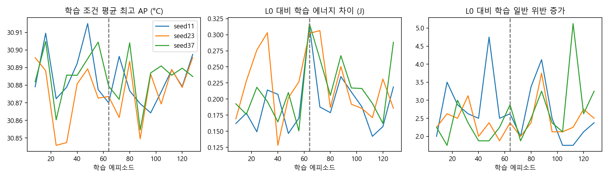
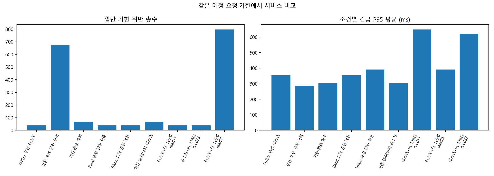
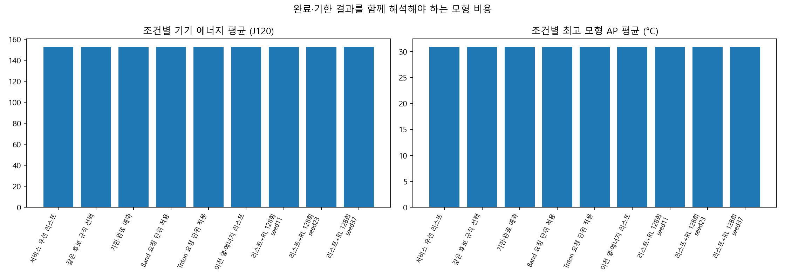
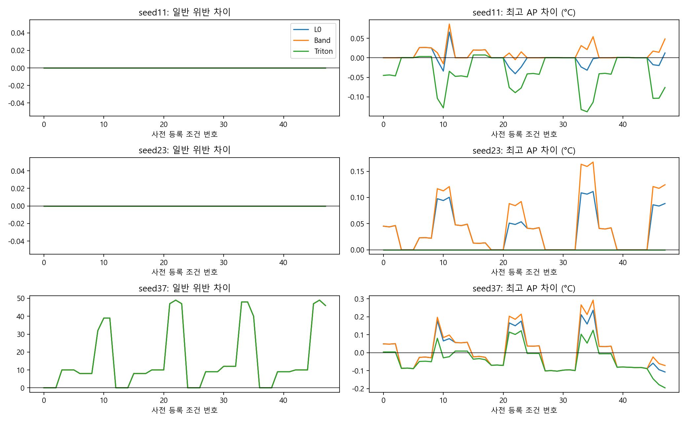
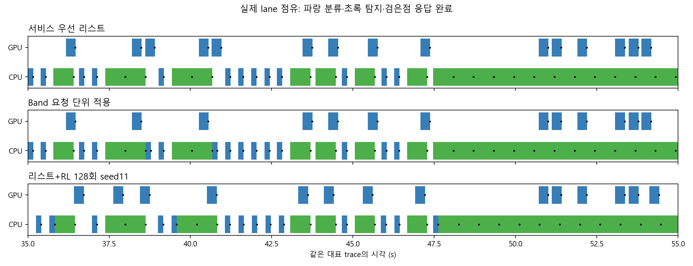
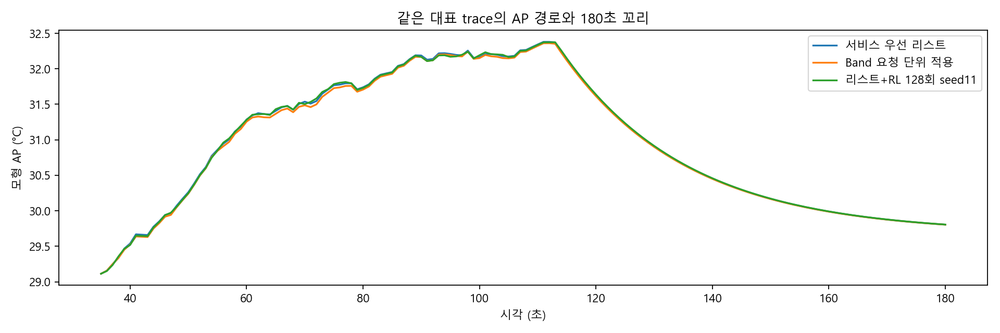

동결 모형의 CPU/GPU 시뮬레이션 비교다. 기한 위반을 무시한 에너지 절감과 실제 제품 우월성을 주장하지 않는다. AP는 같은 모형 채널이며 표면온도·기기 제어 에너지는 미지원이다.
보고서 · 판정·예산·재개 검증 · 전체 CSV · 대응 차이
필터:






| 단계 | 조건 | 부하 | 정책·학습seed | 완료/예정 | 긴급위반 | 일반위반 | 긴급P95 ms | J120 | 최고AP °C |
|---|---|---|---|---|---|---|---|---|---|
| pilot_development | 0 | 낮은 부하 | 서비스 우선 리스트 | 24/24 | 0 | 0 | 156.180 | 142.123 | 30.174 |
| pilot_development | 1 | 낮은 부하 | 서비스 우선 리스트 | 24/24 | 0 | 0 | 156.180 | 142.114 | 30.173 |
| pilot_development | 2 | 낮은 부하 | 서비스 우선 리스트 | 24/24 | 0 | 0 | 156.180 | 142.132 | 30.174 |
| pilot_development | 3 | 큐 몰림 | 서비스 우선 리스트 | 24/24 | 0 | 4 | 398.063 | 141.994 | 30.422 |
| pilot_development | 4 | 큐 몰림 | 서비스 우선 리스트 | 24/24 | 0 | 4 | 382.894 | 141.980 | 30.419 |
| pilot_development | 5 | 큐 몰림 | 서비스 우선 리스트 | 24/24 | 0 | 4 | 413.233 | 142.007 | 30.426 |
| pilot_development | 6 | 순간 몰림 | 서비스 우선 리스트 | 24/24 | 0 | 1 | 578.633 | 141.864 | 30.473 |
| pilot_development | 7 | 순간 몰림 | 서비스 우선 리스트 | 24/24 | 0 | 1 | 555.740 | 141.847 | 30.470 |
| pilot_development | 8 | 순간 몰림 | 서비스 우선 리스트 | 24/24 | 0 | 1 | 601.526 | 141.881 | 30.477 |
| pilot_development | 9 | 지속 부하 | 서비스 우선 리스트 | 192/192 | 0 | 0 | 294.055 | 183.309 | 32.412 |
| pilot_development | 10 | 지속 부하 | 서비스 우선 리스트 | 192/192 | 0 | 0 | 286.608 | 183.148 | 32.395 |
| pilot_development | 11 | 지속 부하 | 서비스 우선 리스트 | 192/192 | 0 | 0 | 301.501 | 183.468 | 32.428 |
| pilot_development | 12 | 낮은 부하 | 서비스 우선 리스트 | 24/24 | 0 | 0 | 156.180 | 142.123 | 30.248 |
| pilot_development | 13 | 낮은 부하 | 서비스 우선 리스트 | 24/24 | 0 | 0 | 156.180 | 142.114 | 30.247 |
| pilot_development | 14 | 낮은 부하 | 서비스 우선 리스트 | 24/24 | 0 | 0 | 156.180 | 142.132 | 30.249 |
| pilot_development | 15 | 큐 몰림 | 서비스 우선 리스트 | 24/24 | 0 | 2 | 398.652 | 141.864 | 30.477 |
| pilot_development | 16 | 큐 몰림 | 서비스 우선 리스트 | 24/24 | 0 | 2 | 383.483 | 141.847 | 30.473 |
| pilot_development | 17 | 큐 몰림 | 서비스 우선 리스트 | 24/24 | 0 | 2 | 413.822 | 141.881 | 30.481 |
| pilot_development | 18 | 순간 몰림 | 서비스 우선 리스트 | 24/24 | 0 | 1 | 518.107 | 141.864 | 30.480 |
| pilot_development | 19 | 순간 몰림 | 서비스 우선 리스트 | 24/24 | 0 | 1 | 502.938 | 141.847 | 30.476 |
| pilot_development | 20 | 순간 몰림 | 서비스 우선 리스트 | 24/24 | 0 | 1 | 533.277 | 141.881 | 30.483 |
| pilot_development | 21 | 지속 부하 | 서비스 우선 리스트 | 192/192 | 0 | 0 | 294.055 | 183.331 | 32.330 |
| pilot_development | 22 | 지속 부하 | 서비스 우선 리스트 | 192/192 | 0 | 0 | 286.608 | 183.138 | 32.315 |
| pilot_development | 23 | 지속 부하 | 서비스 우선 리스트 | 192/192 | 0 | 0 | 301.501 | 183.523 | 32.346 |
| pilot_development | 0 | 낮은 부하 | 같은 후보 규칙 선택 | 24/24 | 0 | 0 | 156.180 | 142.123 | 30.158 |
| pilot_development | 1 | 낮은 부하 | 같은 후보 규칙 선택 | 24/24 | 0 | 0 | 156.180 | 142.114 | 30.158 |
| pilot_development | 2 | 낮은 부하 | 같은 후보 규칙 선택 | 24/24 | 0 | 0 | 156.180 | 142.132 | 30.159 |
| pilot_development | 3 | 큐 몰림 | 같은 후보 규칙 선택 | 24/24 | 0 | 10 | 294.055 | 142.107 | 30.375 |
| pilot_development | 4 | 큐 몰림 | 같은 후보 규칙 선택 | 24/24 | 0 | 10 | 286.608 | 142.095 | 30.375 |
| pilot_development | 5 | 큐 몰림 | 같은 후보 규칙 선택 | 24/24 | 0 | 10 | 301.501 | 142.119 | 30.376 |
| pilot_development | 6 | 순간 몰림 | 같은 후보 규칙 선택 | 24/24 | 0 | 10 | 294.055 | 142.080 | 30.389 |
| pilot_development | 7 | 순간 몰림 | 같은 후보 규칙 선택 | 24/24 | 0 | 10 | 286.608 | 142.070 | 30.387 |
| pilot_development | 8 | 순간 몰림 | 같은 후보 규칙 선택 | 24/24 | 0 | 10 | 301.501 | 142.090 | 30.391 |
| pilot_development | 9 | 지속 부하 | 같은 후보 규칙 선택 | 192/192 | 0 | 31 | 294.055 | 183.184 | 32.539 |
| pilot_development | 10 | 지속 부하 | 같은 후보 규칙 선택 | 192/192 | 0 | 36 | 286.608 | 183.003 | 32.497 |
| pilot_development | 11 | 지속 부하 | 같은 후보 규칙 선택 | 192/192 | 0 | 31 | 301.501 | 183.297 | 32.560 |
| pilot_development | 12 | 낮은 부하 | 같은 후보 규칙 선택 | 24/24 | 0 | 0 | 156.180 | 142.123 | 30.255 |
| pilot_development | 13 | 낮은 부하 | 같은 후보 규칙 선택 | 24/24 | 0 | 0 | 156.180 | 142.114 | 30.254 |
| pilot_development | 14 | 낮은 부하 | 같은 후보 규칙 선택 | 24/24 | 0 | 0 | 156.180 | 142.132 | 30.256 |
| pilot_development | 15 | 큐 몰림 | 같은 후보 규칙 선택 | 24/24 | 0 | 11 | 294.055 | 142.037 | 30.398 |
| pilot_development | 16 | 큐 몰림 | 같은 후보 규칙 선택 | 24/24 | 0 | 11 | 286.608 | 142.025 | 30.396 |
| pilot_development | 17 | 큐 몰림 | 같은 후보 규칙 선택 | 24/24 | 0 | 11 | 301.501 | 142.048 | 30.399 |
| pilot_development | 18 | 순간 몰림 | 같은 후보 규칙 선택 | 24/24 | 0 | 11 | 294.055 | 142.080 | 30.364 |
| pilot_development | 19 | 순간 몰림 | 같은 후보 규칙 선택 | 24/24 | 0 | 11 | 286.608 | 142.070 | 30.362 |
| pilot_development | 20 | 순간 몰림 | 같은 후보 규칙 선택 | 24/24 | 0 | 11 | 301.501 | 142.090 | 30.366 |
| pilot_development | 21 | 지속 부하 | 같은 후보 규칙 선택 | 192/192 | 0 | 28 | 294.055 | 183.386 | 32.510 |
| pilot_development | 22 | 지속 부하 | 같은 후보 규칙 선택 | 192/192 | 0 | 28 | 286.608 | 183.029 | 32.488 |
| pilot_development | 23 | 지속 부하 | 같은 후보 규칙 선택 | 192/192 | 0 | 26 | 301.501 | 183.523 | 32.538 |
| pilot_development | 0 | 낮은 부하 | 기한·완료 예측 | 24/24 | 0 | 0 | 156.180 | 142.123 | 30.174 |
| pilot_development | 1 | 낮은 부하 | 기한·완료 예측 | 24/24 | 0 | 0 | 156.180 | 142.114 | 30.173 |
| pilot_development | 2 | 낮은 부하 | 기한·완료 예측 | 24/24 | 0 | 0 | 156.180 | 142.132 | 30.174 |
| pilot_development | 3 | 큐 몰림 | 기한·완료 예측 | 24/24 | 0 | 5 | 294.055 | 142.085 | 30.371 |
| pilot_development | 4 | 큐 몰림 | 기한·완료 예측 | 24/24 | 0 | 5 | 286.608 | 142.074 | 30.371 |
| pilot_development | 5 | 큐 몰림 | 기한·완료 예측 | 24/24 | 0 | 5 | 301.501 | 142.097 | 30.371 |
| pilot_development | 6 | 순간 몰림 | 기한·완료 예측 | 24/24 | 0 | 2 | 521.025 | 141.994 | 30.424 |
| pilot_development | 7 | 순간 몰림 | 기한·완료 예측 | 24/24 | 0 | 2 | 505.855 | 141.978 | 30.420 |
| pilot_development | 8 | 순간 몰림 | 기한·완료 예측 | 24/24 | 0 | 2 | 536.194 | 142.010 | 30.428 |
| pilot_development | 9 | 지속 부하 | 기한·완료 예측 | 192/192 | 0 | 0 | 294.055 | 183.541 | 32.241 |
| pilot_development | 10 | 지속 부하 | 기한·완료 예측 | 192/192 | 0 | 0 | 286.608 | 183.373 | 32.329 |
| pilot_development | 11 | 지속 부하 | 기한·완료 예측 | 192/192 | 0 | 0 | 301.501 | 183.663 | 32.254 |
| pilot_development | 12 | 낮은 부하 | 기한·완료 예측 | 24/24 | 0 | 0 | 156.180 | 142.123 | 30.248 |
| pilot_development | 13 | 낮은 부하 | 기한·완료 예측 | 24/24 | 0 | 0 | 156.180 | 142.114 | 30.247 |
| pilot_development | 14 | 낮은 부하 | 기한·완료 예측 | 24/24 | 0 | 0 | 156.180 | 142.132 | 30.249 |
| pilot_development | 15 | 큐 몰림 | 기한·완료 예측 | 24/24 | 0 | 3 | 398.652 | 141.950 | 30.421 |
| pilot_development | 16 | 큐 몰림 | 기한·완료 예측 | 24/24 | 0 | 3 | 383.483 | 141.936 | 30.417 |
| pilot_development | 17 | 큐 몰림 | 기한·완료 예측 | 24/24 | 0 | 3 | 413.822 | 141.965 | 30.425 |
| pilot_development | 18 | 순간 몰림 | 기한·완료 예측 | 24/24 | 0 | 2 | 434.274 | 141.914 | 30.439 |
| pilot_development | 19 | 순간 몰림 | 기한·완료 예측 | 24/24 | 0 | 2 | 419.104 | 141.898 | 30.434 |
| pilot_development | 20 | 순간 몰림 | 기한·완료 예측 | 24/24 | 0 | 2 | 449.443 | 141.930 | 30.443 |
| pilot_development | 21 | 지속 부하 | 기한·완료 예측 | 192/192 | 0 | 0 | 294.055 | 183.744 | 32.162 |
| pilot_development | 22 | 지속 부하 | 기한·완료 예측 | 192/192 | 0 | 0 | 286.608 | 183.593 | 32.149 |
| pilot_development | 23 | 지속 부하 | 기한·완료 예측 | 192/192 | 0 | 0 | 301.501 | 183.901 | 32.186 |
| pilot_development | 0 | 낮은 부하 | Band 요청 단위 적용 | 24/24 | 0 | 0 | 156.180 | 142.123 | 30.174 |
| pilot_development | 1 | 낮은 부하 | Band 요청 단위 적용 | 24/24 | 0 | 0 | 156.180 | 142.114 | 30.173 |
| pilot_development | 2 | 낮은 부하 | Band 요청 단위 적용 | 24/24 | 0 | 0 | 156.180 | 142.132 | 30.174 |
| pilot_development | 3 | 큐 몰림 | Band 요청 단위 적용 | 24/24 | 0 | 4 | 398.063 | 141.994 | 30.422 |
| pilot_development | 4 | 큐 몰림 | Band 요청 단위 적용 | 24/24 | 0 | 4 | 382.894 | 141.980 | 30.419 |
| pilot_development | 5 | 큐 몰림 | Band 요청 단위 적용 | 24/24 | 0 | 4 | 413.233 | 142.007 | 30.426 |
| pilot_development | 6 | 순간 몰림 | Band 요청 단위 적용 | 24/24 | 0 | 1 | 578.633 | 141.864 | 30.473 |
| pilot_development | 7 | 순간 몰림 | Band 요청 단위 적용 | 24/24 | 0 | 1 | 555.740 | 141.847 | 30.470 |
| pilot_development | 8 | 순간 몰림 | Band 요청 단위 적용 | 24/24 | 0 | 1 | 601.526 | 141.881 | 30.477 |
| pilot_development | 9 | 지속 부하 | Band 요청 단위 적용 | 192/192 | 0 | 0 | 294.055 | 183.144 | 32.397 |
| pilot_development | 10 | 지속 부하 | Band 요청 단위 적용 | 192/192 | 0 | 0 | 286.608 | 182.997 | 32.381 |
| pilot_development | 11 | 지속 부하 | Band 요청 단위 적용 | 192/192 | 0 | 0 | 301.501 | 183.290 | 32.412 |
| pilot_development | 12 | 낮은 부하 | Band 요청 단위 적용 | 24/24 | 0 | 0 | 156.180 | 142.123 | 30.248 |
| pilot_development | 13 | 낮은 부하 | Band 요청 단위 적용 | 24/24 | 0 | 0 | 156.180 | 142.114 | 30.247 |
| pilot_development | 14 | 낮은 부하 | Band 요청 단위 적용 | 24/24 | 0 | 0 | 156.180 | 142.132 | 30.249 |
| pilot_development | 15 | 큐 몰림 | Band 요청 단위 적용 | 24/24 | 0 | 2 | 398.652 | 141.864 | 30.477 |
| pilot_development | 16 | 큐 몰림 | Band 요청 단위 적용 | 24/24 | 0 | 2 | 383.483 | 141.847 | 30.473 |
| pilot_development | 17 | 큐 몰림 | Band 요청 단위 적용 | 24/24 | 0 | 2 | 413.822 | 141.881 | 30.481 |
| pilot_development | 18 | 순간 몰림 | Band 요청 단위 적용 | 24/24 | 0 | 1 | 518.107 | 141.864 | 30.480 |
| pilot_development | 19 | 순간 몰림 | Band 요청 단위 적용 | 24/24 | 0 | 1 | 502.938 | 141.847 | 30.476 |
| pilot_development | 20 | 순간 몰림 | Band 요청 단위 적용 | 24/24 | 0 | 1 | 533.277 | 141.881 | 30.483 |
| pilot_development | 21 | 지속 부하 | Band 요청 단위 적용 | 192/192 | 0 | 0 | 294.055 | 183.207 | 32.326 |
| pilot_development | 22 | 지속 부하 | Band 요청 단위 적용 | 192/192 | 0 | 0 | 286.608 | 183.026 | 32.311 |
| pilot_development | 23 | 지속 부하 | Band 요청 단위 적용 | 192/192 | 0 | 0 | 301.501 | 183.387 | 32.341 |
| pilot_development | 0 | 낮은 부하 | Triton 요청 단위 적용 | 24/24 | 0 | 0 | 294.055 | 142.409 | 30.224 |
| pilot_development | 1 | 낮은 부하 | Triton 요청 단위 적용 | 24/24 | 0 | 0 | 286.608 | 142.378 | 30.222 |
| pilot_development | 2 | 낮은 부하 | Triton 요청 단위 적용 | 24/24 | 0 | 0 | 301.501 | 142.440 | 30.226 |
| pilot_development | 3 | 큐 몰림 | Triton 요청 단위 적용 | 24/24 | 0 | 4 | 508.566 | 142.042 | 30.461 |
| pilot_development | 4 | 큐 몰림 | Triton 요청 단위 적용 | 24/24 | 0 | 4 | 485.674 | 142.025 | 30.456 |
| pilot_development | 5 | 큐 몰림 | Triton 요청 단위 적용 | 24/24 | 0 | 4 | 531.459 | 142.059 | 30.466 |
| pilot_development | 6 | 순간 몰림 | Triton 요청 단위 적용 | 24/24 | 0 | 1 | 578.633 | 141.864 | 30.473 |
| pilot_development | 7 | 순간 몰림 | Triton 요청 단위 적용 | 24/24 | 0 | 1 | 555.740 | 141.847 | 30.470 |
| pilot_development | 8 | 순간 몰림 | Triton 요청 단위 적용 | 24/24 | 0 | 1 | 601.526 | 141.881 | 30.477 |
| pilot_development | 9 | 지속 부하 | Triton 요청 단위 적용 | 192/192 | 0 | 0 | 294.055 | 184.927 | 32.515 |
| pilot_development | 10 | 지속 부하 | Triton 요청 단위 적용 | 192/192 | 0 | 0 | 286.608 | 184.642 | 32.495 |
| pilot_development | 11 | 지속 부하 | Triton 요청 단위 적용 | 192/192 | 0 | 0 | 301.501 | 185.210 | 32.533 |
| pilot_development | 12 | 낮은 부하 | Triton 요청 단위 적용 | 24/24 | 0 | 0 | 294.055 | 142.409 | 30.287 |
| pilot_development | 13 | 낮은 부하 | Triton 요청 단위 적용 | 24/24 | 0 | 0 | 286.608 | 142.378 | 30.285 |
| pilot_development | 14 | 낮은 부하 | Triton 요청 단위 적용 | 24/24 | 0 | 0 | 301.501 | 142.440 | 30.289 |
| pilot_development | 15 | 큐 몰림 | Triton 요청 단위 적용 | 24/24 | 0 | 2 | 398.652 | 141.864 | 30.477 |
| pilot_development | 16 | 큐 몰림 | Triton 요청 단위 적용 | 24/24 | 0 | 2 | 383.483 | 141.847 | 30.473 |
| pilot_development | 17 | 큐 몰림 | Triton 요청 단위 적용 | 24/24 | 0 | 2 | 413.822 | 141.881 | 30.481 |
| pilot_development | 18 | 순간 몰림 | Triton 요청 단위 적용 | 24/24 | 0 | 1 | 518.107 | 141.864 | 30.480 |
| pilot_development | 19 | 순간 몰림 | Triton 요청 단위 적용 | 24/24 | 0 | 1 | 502.938 | 141.847 | 30.476 |
| pilot_development | 20 | 순간 몰림 | Triton 요청 단위 적용 | 24/24 | 0 | 1 | 533.277 | 141.881 | 30.483 |
| pilot_development | 21 | 지속 부하 | Triton 요청 단위 적용 | 192/192 | 0 | 0 | 294.055 | 184.711 | 32.441 |
| pilot_development | 22 | 지속 부하 | Triton 요청 단위 적용 | 192/192 | 0 | 0 | 286.608 | 184.412 | 32.422 |
| pilot_development | 23 | 지속 부하 | Triton 요청 단위 적용 | 192/192 | 0 | 0 | 301.501 | 185.009 | 32.460 |
| pilot_development | 0 | 낮은 부하 | 이전 열·에너지 리스트 | 24/24 | 0 | 0 | 156.180 | 142.123 | 30.153 |
| pilot_development | 1 | 낮은 부하 | 이전 열·에너지 리스트 | 24/24 | 0 | 0 | 156.180 | 142.114 | 30.152 |
| pilot_development | 2 | 낮은 부하 | 이전 열·에너지 리스트 | 24/24 | 0 | 0 | 156.180 | 142.132 | 30.154 |
| pilot_development | 3 | 큐 몰림 | 이전 열·에너지 리스트 | 24/24 | 0 | 5 | 294.055 | 142.054 | 30.373 |
| pilot_development | 4 | 큐 몰림 | 이전 열·에너지 리스트 | 24/24 | 0 | 5 | 286.608 | 142.040 | 30.370 |
| pilot_development | 5 | 큐 몰림 | 이전 열·에너지 리스트 | 24/24 | 0 | 5 | 301.501 | 142.067 | 30.376 |
| pilot_development | 6 | 순간 몰림 | 이전 열·에너지 리스트 | 24/24 | 0 | 2 | 521.025 | 141.927 | 30.451 |
| pilot_development | 7 | 순간 몰림 | 이전 열·에너지 리스트 | 24/24 | 0 | 2 | 505.855 | 141.907 | 30.447 |
| pilot_development | 8 | 순간 몰림 | 이전 열·에너지 리스트 | 24/24 | 0 | 3 | 536.194 | 141.989 | 30.405 |
| pilot_development | 9 | 지속 부하 | 이전 열·에너지 리스트 | 192/192 | 0 | 5 | 401.174 | 182.937 | 32.418 |
| pilot_development | 10 | 지속 부하 | 이전 열·에너지 리스트 | 192/192 | 0 | 1 | 294.545 | 182.806 | 32.383 |
| pilot_development | 11 | 지속 부하 | 이전 열·에너지 리스트 | 192/192 | 0 | 1 | 413.402 | 183.065 | 32.433 |
| pilot_development | 12 | 낮은 부하 | 이전 열·에너지 리스트 | 24/24 | 0 | 0 | 156.180 | 142.123 | 30.250 |
| pilot_development | 13 | 낮은 부하 | 이전 열·에너지 리스트 | 24/24 | 0 | 0 | 156.180 | 142.114 | 30.249 |
| pilot_development | 14 | 낮은 부하 | 이전 열·에너지 리스트 | 24/24 | 0 | 0 | 156.180 | 142.132 | 30.251 |
| pilot_development | 15 | 큐 몰림 | 이전 열·에너지 리스트 | 24/24 | 0 | 3 | 398.652 | 141.907 | 30.443 |
| pilot_development | 16 | 큐 몰림 | 이전 열·에너지 리스트 | 24/24 | 0 | 3 | 383.483 | 141.891 | 30.439 |
| pilot_development | 17 | 큐 몰림 | 이전 열·에너지 리스트 | 24/24 | 0 | 3 | 413.822 | 141.923 | 30.448 |
| pilot_development | 18 | 순간 몰림 | 이전 열·에너지 리스트 | 24/24 | 0 | 2 | 434.274 | 141.914 | 30.439 |
| pilot_development | 19 | 순간 몰림 | 이전 열·에너지 리스트 | 24/24 | 0 | 2 | 419.104 | 141.898 | 30.434 |
| pilot_development | 20 | 순간 몰림 | 이전 열·에너지 리스트 | 24/24 | 0 | 2 | 449.443 | 141.930 | 30.443 |
| pilot_development | 21 | 지속 부하 | 이전 열·에너지 리스트 | 192/192 | 0 | 0 | 294.055 | 182.980 | 32.406 |
| pilot_development | 22 | 지속 부하 | 이전 열·에너지 리스트 | 192/192 | 0 | 0 | 286.608 | 182.844 | 32.366 |
| pilot_development | 23 | 지속 부하 | 이전 열·에너지 리스트 | 192/192 | 0 | 0 | 301.501 | 183.156 | 32.414 |
| pilot_development | 0 | 낮은 부하 | 리스트+RL 64회 seed11 | 24/24 | 0 | 0 | 406.180 | 142.123 | 30.158 |
| pilot_development | 1 | 낮은 부하 | 리스트+RL 64회 seed11 | 24/24 | 0 | 0 | 406.180 | 142.114 | 30.157 |
| pilot_development | 2 | 낮은 부하 | 리스트+RL 64회 seed11 | 24/24 | 0 | 0 | 406.180 | 142.132 | 30.159 |
| pilot_development | 3 | 큐 몰림 | 리스트+RL 64회 seed11 | 24/24 | 1 | 10 | 1618.953 | 141.923 | 30.461 |
| pilot_development | 4 | 큐 몰림 | 리스트+RL 64회 seed11 | 24/24 | 1 | 9 | 1603.784 | 141.908 | 30.456 |
| pilot_development | 5 | 큐 몰림 | 리스트+RL 64회 seed11 | 24/24 | 1 | 10 | 1634.123 | 141.938 | 30.465 |
| pilot_development | 6 | 순간 몰림 | 리스트+RL 64회 seed11 | 24/24 | 1 | 8 | 1794.055 | 141.864 | 30.456 |
| pilot_development | 7 | 순간 몰림 | 리스트+RL 64회 seed11 | 24/24 | 1 | 8 | 1786.608 | 141.847 | 30.451 |
| pilot_development | 8 | 순간 몰림 | 리스트+RL 64회 seed11 | 24/24 | 1 | 8 | 1801.501 | 142.030 | 30.451 |
| pilot_development | 9 | 지속 부하 | 리스트+RL 64회 seed11 | 192/192 | 32 | 7 | 1794.055 | 182.123 | 32.477 |
| pilot_development | 10 | 지속 부하 | 리스트+RL 64회 seed11 | 192/192 | 30 | 7 | 1786.608 | 182.034 | 32.445 |
| pilot_development | 11 | 지속 부하 | 리스트+RL 64회 seed11 | 192/192 | 34 | 8 | 1801.501 | 182.444 | 32.504 |
| pilot_development | 12 | 낮은 부하 | 리스트+RL 64회 seed11 | 24/24 | 0 | 0 | 406.180 | 142.123 | 30.255 |
| pilot_development | 13 | 낮은 부하 | 리스트+RL 64회 seed11 | 24/24 | 0 | 0 | 406.180 | 142.114 | 30.254 |
| pilot_development | 14 | 낮은 부하 | 리스트+RL 64회 seed11 | 24/24 | 0 | 0 | 406.180 | 142.132 | 30.256 |
| pilot_development | 15 | 큐 몰림 | 리스트+RL 64회 seed11 | 24/24 | 0 | 9 | 1495.804 | 141.949 | 30.454 |
| pilot_development | 16 | 큐 몰림 | 리스트+RL 64회 seed11 | 24/24 | 0 | 9 | 1474.829 | 141.928 | 30.449 |
| pilot_development | 17 | 큐 몰림 | 리스트+RL 64회 seed11 | 24/24 | 2 | 9 | 1521.435 | 141.969 | 30.459 |
| pilot_development | 18 | 순간 몰림 | 리스트+RL 64회 seed11 | 24/24 | 1 | 9 | 1636.539 | 141.864 | 30.459 |
| pilot_development | 19 | 순간 몰림 | 리스트+RL 64회 seed11 | 24/24 | 1 | 9 | 1605.923 | 141.847 | 30.453 |
| pilot_development | 20 | 순간 몰림 | 리스트+RL 64회 seed11 | 24/24 | 1 | 9 | 1667.155 | 141.881 | 30.465 |
| pilot_development | 21 | 지속 부하 | 리스트+RL 64회 seed11 | 192/192 | 22 | 8 | 1794.055 | 182.212 | 32.526 |
| pilot_development | 22 | 지속 부하 | 리스트+RL 64회 seed11 | 192/192 | 19 | 8 | 1786.608 | 181.974 | 32.510 |
| pilot_development | 23 | 지속 부하 | 리스트+RL 64회 seed11 | 192/192 | 23 | 8 | 1801.501 | 182.391 | 32.541 |
| pilot_development | 0 | 낮은 부하 | 리스트+RL 64회 seed23 | 24/24 | 0 | 0 | 544.055 | 142.409 | 30.225 |
| pilot_development | 1 | 낮은 부하 | 리스트+RL 64회 seed23 | 24/24 | 0 | 0 | 536.608 | 142.378 | 30.222 |
| pilot_development | 2 | 낮은 부하 | 리스트+RL 64회 seed23 | 24/24 | 0 | 0 | 551.501 | 142.440 | 30.227 |
| pilot_development | 3 | 큐 몰림 | 리스트+RL 64회 seed23 | 24/24 | 0 | 4 | 1368.289 | 141.955 | 30.474 |
| pilot_development | 4 | 큐 몰림 | 리스트+RL 64회 seed23 | 24/24 | 0 | 4 | 1360.119 | 141.935 | 30.469 |
| pilot_development | 5 | 큐 몰림 | 리스트+RL 64회 seed23 | 24/24 | 0 | 4 | 1376.419 | 141.974 | 30.479 |
| pilot_development | 6 | 순간 몰림 | 리스트+RL 64회 seed23 | 24/24 | 0 | 1 | 1383.855 | 141.864 | 30.476 |
| pilot_development | 7 | 순간 몰림 | 리스트+RL 64회 seed23 | 24/24 | 0 | 1 | 1374.963 | 141.847 | 30.473 |
| pilot_development | 8 | 순간 몰림 | 리스트+RL 64회 seed23 | 24/24 | 0 | 1 | 1392.671 | 141.881 | 30.480 |
| pilot_development | 9 | 지속 부하 | 리스트+RL 64회 seed23 | 192/192 | 0 | 0 | 1323.741 | 183.943 | 32.539 |
| pilot_development | 10 | 지속 부하 | 리스트+RL 64회 seed23 | 192/192 | 0 | 0 | 1316.295 | 183.746 | 32.513 |
| pilot_development | 11 | 지속 부하 | 리스트+RL 64회 seed23 | 192/192 | 3 | 0 | 1357.411 | 184.151 | 32.564 |
| pilot_development | 12 | 낮은 부하 | 리스트+RL 64회 seed23 | 24/24 | 0 | 0 | 544.055 | 142.409 | 30.287 |
| pilot_development | 13 | 낮은 부하 | 리스트+RL 64회 seed23 | 24/24 | 0 | 0 | 536.608 | 142.378 | 30.285 |
| pilot_development | 14 | 낮은 부하 | 리스트+RL 64회 seed23 | 24/24 | 0 | 0 | 551.501 | 142.440 | 30.289 |
| pilot_development | 15 | 큐 몰림 | 리스트+RL 64회 seed23 | 24/24 | 0 | 2 | 1303.272 | 141.864 | 30.481 |
| pilot_development | 16 | 큐 몰림 | 리스트+RL 64회 seed23 | 24/24 | 0 | 2 | 1290.764 | 141.847 | 30.477 |
| pilot_development | 17 | 큐 몰림 | 리스트+RL 64회 seed23 | 24/24 | 0 | 2 | 1315.511 | 141.881 | 30.485 |
| pilot_development | 18 | 순간 몰림 | 리스트+RL 64회 seed23 | 24/24 | 0 | 1 | 1018.107 | 141.864 | 30.482 |
| pilot_development | 19 | 순간 몰림 | 리스트+RL 64회 seed23 | 24/24 | 0 | 1 | 1002.938 | 141.847 | 30.478 |
| pilot_development | 20 | 순간 몰림 | 리스트+RL 64회 seed23 | 24/24 | 0 | 1 | 1033.277 | 141.881 | 30.486 |
| pilot_development | 21 | 지속 부하 | 리스트+RL 64회 seed23 | 192/192 | 0 | 0 | 1306.921 | 184.117 | 32.480 |
| pilot_development | 22 | 지속 부하 | 리스트+RL 64회 seed23 | 192/192 | 0 | 0 | 1299.475 | 183.913 | 32.457 |
| pilot_development | 23 | 지속 부하 | 리스트+RL 64회 seed23 | 192/192 | 5 | 0 | 1506.701 | 184.169 | 32.523 |
| pilot_development | 0 | 낮은 부하 | 리스트+RL 64회 seed37 | 24/24 | 0 | 0 | 544.055 | 142.409 | 30.211 |
| pilot_development | 1 | 낮은 부하 | 리스트+RL 64회 seed37 | 24/24 | 0 | 0 | 536.608 | 142.378 | 30.209 |
| pilot_development | 2 | 낮은 부하 | 리스트+RL 64회 seed37 | 24/24 | 0 | 0 | 551.501 | 142.440 | 30.214 |
| pilot_development | 3 | 큐 몰림 | 리스트+RL 64회 seed37 | 24/24 | 0 | 10 | 1258.566 | 142.143 | 30.428 |
| pilot_development | 4 | 큐 몰림 | 리스트+RL 64회 seed37 | 24/24 | 0 | 10 | 1235.674 | 142.124 | 30.423 |
| pilot_development | 5 | 큐 몰림 | 리스트+RL 64회 seed37 | 24/24 | 0 | 10 | 1281.459 | 142.164 | 30.432 |
| pilot_development | 6 | 순간 몰림 | 리스트+RL 64회 seed37 | 24/24 | 0 | 10 | 1250.041 | 142.162 | 30.417 |
| pilot_development | 7 | 순간 몰림 | 리스트+RL 64회 seed37 | 24/24 | 0 | 10 | 1227.148 | 142.145 | 30.413 |
| pilot_development | 8 | 순간 몰림 | 리스트+RL 64회 seed37 | 24/24 | 0 | 10 | 1270.249 | 142.180 | 30.422 |
| pilot_development | 9 | 지속 부하 | 리스트+RL 64회 seed37 | 192/192 | 1 | 56 | 1161.089 | 183.938 | 32.496 |
| pilot_development | 10 | 지속 부하 | 리스트+RL 64회 seed37 | 192/192 | 1 | 56 | 1122.750 | 183.777 | 32.473 |
| pilot_development | 11 | 지속 부하 | 리스트+RL 64회 seed37 | 192/192 | 2 | 57 | 1101.217 | 184.215 | 32.513 |
| pilot_development | 12 | 낮은 부하 | 리스트+RL 64회 seed37 | 24/24 | 0 | 0 | 544.055 | 142.409 | 30.292 |
| pilot_development | 13 | 낮은 부하 | 리스트+RL 64회 seed37 | 24/24 | 0 | 0 | 536.608 | 142.378 | 30.290 |
| pilot_development | 14 | 낮은 부하 | 리스트+RL 64회 seed37 | 24/24 | 0 | 0 | 551.501 | 142.440 | 30.294 |
| pilot_development | 15 | 큐 몰림 | 리스트+RL 64회 seed37 | 24/24 | 0 | 10 | 925.984 | 142.087 | 30.443 |
| pilot_development | 16 | 큐 몰림 | 리스트+RL 64회 seed37 | 24/24 | 0 | 10 | 900.921 | 142.070 | 30.441 |
| pilot_development | 17 | 큐 몰림 | 리스트+RL 64회 seed37 | 24/24 | 0 | 10 | 948.246 | 142.106 | 30.445 |
| pilot_development | 18 | 순간 몰림 | 리스트+RL 64회 seed37 | 24/24 | 0 | 10 | 1018.107 | 142.152 | 30.450 |
| pilot_development | 19 | 순간 몰림 | 리스트+RL 64회 seed37 | 24/24 | 0 | 10 | 1002.938 | 142.132 | 30.446 |
| pilot_development | 20 | 순간 몰림 | 리스트+RL 64회 seed37 | 24/24 | 0 | 10 | 1033.277 | 142.174 | 30.453 |
| pilot_development | 21 | 지속 부하 | 리스트+RL 64회 seed37 | 192/192 | 0 | 50 | 919.652 | 184.675 | 32.377 |
| pilot_development | 22 | 지속 부하 | 리스트+RL 64회 seed37 | 192/192 | 0 | 47 | 824.562 | 184.311 | 32.344 |
| pilot_development | 23 | 지속 부하 | 리스트+RL 64회 seed37 | 192/192 | 0 | 50 | 969.494 | 184.924 | 32.400 |
| main_development | 0 | 낮은 부하 | 서비스 우선 리스트 | 24/24 | 0 | 0 | 156.180 | 142.123 | 30.174 |
| main_development | 1 | 낮은 부하 | 서비스 우선 리스트 | 24/24 | 0 | 0 | 156.180 | 142.114 | 30.173 |
| main_development | 2 | 낮은 부하 | 서비스 우선 리스트 | 24/24 | 0 | 0 | 156.180 | 142.132 | 30.174 |
| main_development | 3 | 큐 몰림 | 서비스 우선 리스트 | 24/24 | 0 | 4 | 398.063 | 141.994 | 30.422 |
| main_development | 4 | 큐 몰림 | 서비스 우선 리스트 | 24/24 | 0 | 4 | 382.894 | 141.980 | 30.419 |
| main_development | 5 | 큐 몰림 | 서비스 우선 리스트 | 24/24 | 0 | 4 | 413.233 | 142.007 | 30.426 |
| main_development | 6 | 순간 몰림 | 서비스 우선 리스트 | 24/24 | 0 | 1 | 578.633 | 141.864 | 30.473 |
| main_development | 7 | 순간 몰림 | 서비스 우선 리스트 | 24/24 | 0 | 1 | 555.740 | 141.847 | 30.470 |
| main_development | 8 | 순간 몰림 | 서비스 우선 리스트 | 24/24 | 0 | 1 | 601.526 | 141.881 | 30.477 |
| main_development | 9 | 지속 부하 | 서비스 우선 리스트 | 192/192 | 0 | 0 | 294.055 | 183.309 | 32.412 |
| main_development | 10 | 지속 부하 | 서비스 우선 리스트 | 192/192 | 0 | 0 | 286.608 | 183.148 | 32.395 |
| main_development | 11 | 지속 부하 | 서비스 우선 리스트 | 192/192 | 0 | 0 | 301.501 | 183.468 | 32.428 |
| main_development | 12 | 낮은 부하 | 서비스 우선 리스트 | 24/24 | 0 | 0 | 156.180 | 142.123 | 30.248 |
| main_development | 13 | 낮은 부하 | 서비스 우선 리스트 | 24/24 | 0 | 0 | 156.180 | 142.114 | 30.247 |
| main_development | 14 | 낮은 부하 | 서비스 우선 리스트 | 24/24 | 0 | 0 | 156.180 | 142.132 | 30.249 |
| main_development | 15 | 큐 몰림 | 서비스 우선 리스트 | 24/24 | 0 | 2 | 398.652 | 141.864 | 30.477 |
| main_development | 16 | 큐 몰림 | 서비스 우선 리스트 | 24/24 | 0 | 2 | 383.483 | 141.847 | 30.473 |
| main_development | 17 | 큐 몰림 | 서비스 우선 리스트 | 24/24 | 0 | 2 | 413.822 | 141.881 | 30.481 |
| main_development | 18 | 순간 몰림 | 서비스 우선 리스트 | 24/24 | 0 | 1 | 518.107 | 141.864 | 30.480 |
| main_development | 19 | 순간 몰림 | 서비스 우선 리스트 | 24/24 | 0 | 1 | 502.938 | 141.847 | 30.476 |
| main_development | 20 | 순간 몰림 | 서비스 우선 리스트 | 24/24 | 0 | 1 | 533.277 | 141.881 | 30.483 |
| main_development | 21 | 지속 부하 | 서비스 우선 리스트 | 192/192 | 0 | 0 | 294.055 | 183.331 | 32.330 |
| main_development | 22 | 지속 부하 | 서비스 우선 리스트 | 192/192 | 0 | 0 | 286.608 | 183.138 | 32.315 |
| main_development | 23 | 지속 부하 | 서비스 우선 리스트 | 192/192 | 0 | 0 | 301.501 | 183.523 | 32.346 |
| main_development | 0 | 낮은 부하 | 같은 후보 규칙 선택 | 24/24 | 0 | 0 | 156.180 | 142.123 | 30.158 |
| main_development | 1 | 낮은 부하 | 같은 후보 규칙 선택 | 24/24 | 0 | 0 | 156.180 | 142.114 | 30.158 |
| main_development | 2 | 낮은 부하 | 같은 후보 규칙 선택 | 24/24 | 0 | 0 | 156.180 | 142.132 | 30.159 |
| main_development | 3 | 큐 몰림 | 같은 후보 규칙 선택 | 24/24 | 0 | 10 | 294.055 | 142.107 | 30.375 |
| main_development | 4 | 큐 몰림 | 같은 후보 규칙 선택 | 24/24 | 0 | 10 | 286.608 | 142.095 | 30.375 |
| main_development | 5 | 큐 몰림 | 같은 후보 규칙 선택 | 24/24 | 0 | 10 | 301.501 | 142.119 | 30.376 |
| main_development | 6 | 순간 몰림 | 같은 후보 규칙 선택 | 24/24 | 0 | 10 | 294.055 | 142.080 | 30.389 |
| main_development | 7 | 순간 몰림 | 같은 후보 규칙 선택 | 24/24 | 0 | 10 | 286.608 | 142.070 | 30.387 |
| main_development | 8 | 순간 몰림 | 같은 후보 규칙 선택 | 24/24 | 0 | 10 | 301.501 | 142.090 | 30.391 |
| main_development | 9 | 지속 부하 | 같은 후보 규칙 선택 | 192/192 | 0 | 31 | 294.055 | 183.184 | 32.539 |
| main_development | 10 | 지속 부하 | 같은 후보 규칙 선택 | 192/192 | 0 | 36 | 286.608 | 183.003 | 32.497 |
| main_development | 11 | 지속 부하 | 같은 후보 규칙 선택 | 192/192 | 0 | 31 | 301.501 | 183.297 | 32.560 |
| main_development | 12 | 낮은 부하 | 같은 후보 규칙 선택 | 24/24 | 0 | 0 | 156.180 | 142.123 | 30.255 |
| main_development | 13 | 낮은 부하 | 같은 후보 규칙 선택 | 24/24 | 0 | 0 | 156.180 | 142.114 | 30.254 |
| main_development | 14 | 낮은 부하 | 같은 후보 규칙 선택 | 24/24 | 0 | 0 | 156.180 | 142.132 | 30.256 |
| main_development | 15 | 큐 몰림 | 같은 후보 규칙 선택 | 24/24 | 0 | 11 | 294.055 | 142.037 | 30.398 |
| main_development | 16 | 큐 몰림 | 같은 후보 규칙 선택 | 24/24 | 0 | 11 | 286.608 | 142.025 | 30.396 |
| main_development | 17 | 큐 몰림 | 같은 후보 규칙 선택 | 24/24 | 0 | 11 | 301.501 | 142.048 | 30.399 |
| main_development | 18 | 순간 몰림 | 같은 후보 규칙 선택 | 24/24 | 0 | 11 | 294.055 | 142.080 | 30.364 |
| main_development | 19 | 순간 몰림 | 같은 후보 규칙 선택 | 24/24 | 0 | 11 | 286.608 | 142.070 | 30.362 |
| main_development | 20 | 순간 몰림 | 같은 후보 규칙 선택 | 24/24 | 0 | 11 | 301.501 | 142.090 | 30.366 |
| main_development | 21 | 지속 부하 | 같은 후보 규칙 선택 | 192/192 | 0 | 28 | 294.055 | 183.386 | 32.510 |
| main_development | 22 | 지속 부하 | 같은 후보 규칙 선택 | 192/192 | 0 | 28 | 286.608 | 183.029 | 32.488 |
| main_development | 23 | 지속 부하 | 같은 후보 규칙 선택 | 192/192 | 0 | 26 | 301.501 | 183.523 | 32.538 |
| main_development | 0 | 낮은 부하 | 기한·완료 예측 | 24/24 | 0 | 0 | 156.180 | 142.123 | 30.174 |
| main_development | 1 | 낮은 부하 | 기한·완료 예측 | 24/24 | 0 | 0 | 156.180 | 142.114 | 30.173 |
| main_development | 2 | 낮은 부하 | 기한·완료 예측 | 24/24 | 0 | 0 | 156.180 | 142.132 | 30.174 |
| main_development | 3 | 큐 몰림 | 기한·완료 예측 | 24/24 | 0 | 5 | 294.055 | 142.085 | 30.371 |
| main_development | 4 | 큐 몰림 | 기한·완료 예측 | 24/24 | 0 | 5 | 286.608 | 142.074 | 30.371 |
| main_development | 5 | 큐 몰림 | 기한·완료 예측 | 24/24 | 0 | 5 | 301.501 | 142.097 | 30.371 |
| main_development | 6 | 순간 몰림 | 기한·완료 예측 | 24/24 | 0 | 2 | 521.025 | 141.994 | 30.424 |
| main_development | 7 | 순간 몰림 | 기한·완료 예측 | 24/24 | 0 | 2 | 505.855 | 141.978 | 30.420 |
| main_development | 8 | 순간 몰림 | 기한·완료 예측 | 24/24 | 0 | 2 | 536.194 | 142.010 | 30.428 |
| main_development | 9 | 지속 부하 | 기한·완료 예측 | 192/192 | 0 | 0 | 294.055 | 183.541 | 32.241 |
| main_development | 10 | 지속 부하 | 기한·완료 예측 | 192/192 | 0 | 0 | 286.608 | 183.373 | 32.329 |
| main_development | 11 | 지속 부하 | 기한·완료 예측 | 192/192 | 0 | 0 | 301.501 | 183.663 | 32.254 |
| main_development | 12 | 낮은 부하 | 기한·완료 예측 | 24/24 | 0 | 0 | 156.180 | 142.123 | 30.248 |
| main_development | 13 | 낮은 부하 | 기한·완료 예측 | 24/24 | 0 | 0 | 156.180 | 142.114 | 30.247 |
| main_development | 14 | 낮은 부하 | 기한·완료 예측 | 24/24 | 0 | 0 | 156.180 | 142.132 | 30.249 |
| main_development | 15 | 큐 몰림 | 기한·완료 예측 | 24/24 | 0 | 3 | 398.652 | 141.950 | 30.421 |
| main_development | 16 | 큐 몰림 | 기한·완료 예측 | 24/24 | 0 | 3 | 383.483 | 141.936 | 30.417 |
| main_development | 17 | 큐 몰림 | 기한·완료 예측 | 24/24 | 0 | 3 | 413.822 | 141.965 | 30.425 |
| main_development | 18 | 순간 몰림 | 기한·완료 예측 | 24/24 | 0 | 2 | 434.274 | 141.914 | 30.439 |
| main_development | 19 | 순간 몰림 | 기한·완료 예측 | 24/24 | 0 | 2 | 419.104 | 141.898 | 30.434 |
| main_development | 20 | 순간 몰림 | 기한·완료 예측 | 24/24 | 0 | 2 | 449.443 | 141.930 | 30.443 |
| main_development | 21 | 지속 부하 | 기한·완료 예측 | 192/192 | 0 | 0 | 294.055 | 183.744 | 32.162 |
| main_development | 22 | 지속 부하 | 기한·완료 예측 | 192/192 | 0 | 0 | 286.608 | 183.593 | 32.149 |
| main_development | 23 | 지속 부하 | 기한·완료 예측 | 192/192 | 0 | 0 | 301.501 | 183.901 | 32.186 |
| main_development | 0 | 낮은 부하 | Band 요청 단위 적용 | 24/24 | 0 | 0 | 156.180 | 142.123 | 30.174 |
| main_development | 1 | 낮은 부하 | Band 요청 단위 적용 | 24/24 | 0 | 0 | 156.180 | 142.114 | 30.173 |
| main_development | 2 | 낮은 부하 | Band 요청 단위 적용 | 24/24 | 0 | 0 | 156.180 | 142.132 | 30.174 |
| main_development | 3 | 큐 몰림 | Band 요청 단위 적용 | 24/24 | 0 | 4 | 398.063 | 141.994 | 30.422 |
| main_development | 4 | 큐 몰림 | Band 요청 단위 적용 | 24/24 | 0 | 4 | 382.894 | 141.980 | 30.419 |
| main_development | 5 | 큐 몰림 | Band 요청 단위 적용 | 24/24 | 0 | 4 | 413.233 | 142.007 | 30.426 |
| main_development | 6 | 순간 몰림 | Band 요청 단위 적용 | 24/24 | 0 | 1 | 578.633 | 141.864 | 30.473 |
| main_development | 7 | 순간 몰림 | Band 요청 단위 적용 | 24/24 | 0 | 1 | 555.740 | 141.847 | 30.470 |
| main_development | 8 | 순간 몰림 | Band 요청 단위 적용 | 24/24 | 0 | 1 | 601.526 | 141.881 | 30.477 |
| main_development | 9 | 지속 부하 | Band 요청 단위 적용 | 192/192 | 0 | 0 | 294.055 | 183.144 | 32.397 |
| main_development | 10 | 지속 부하 | Band 요청 단위 적용 | 192/192 | 0 | 0 | 286.608 | 182.997 | 32.381 |
| main_development | 11 | 지속 부하 | Band 요청 단위 적용 | 192/192 | 0 | 0 | 301.501 | 183.290 | 32.412 |
| main_development | 12 | 낮은 부하 | Band 요청 단위 적용 | 24/24 | 0 | 0 | 156.180 | 142.123 | 30.248 |
| main_development | 13 | 낮은 부하 | Band 요청 단위 적용 | 24/24 | 0 | 0 | 156.180 | 142.114 | 30.247 |
| main_development | 14 | 낮은 부하 | Band 요청 단위 적용 | 24/24 | 0 | 0 | 156.180 | 142.132 | 30.249 |
| main_development | 15 | 큐 몰림 | Band 요청 단위 적용 | 24/24 | 0 | 2 | 398.652 | 141.864 | 30.477 |
| main_development | 16 | 큐 몰림 | Band 요청 단위 적용 | 24/24 | 0 | 2 | 383.483 | 141.847 | 30.473 |
| main_development | 17 | 큐 몰림 | Band 요청 단위 적용 | 24/24 | 0 | 2 | 413.822 | 141.881 | 30.481 |
| main_development | 18 | 순간 몰림 | Band 요청 단위 적용 | 24/24 | 0 | 1 | 518.107 | 141.864 | 30.480 |
| main_development | 19 | 순간 몰림 | Band 요청 단위 적용 | 24/24 | 0 | 1 | 502.938 | 141.847 | 30.476 |
| main_development | 20 | 순간 몰림 | Band 요청 단위 적용 | 24/24 | 0 | 1 | 533.277 | 141.881 | 30.483 |
| main_development | 21 | 지속 부하 | Band 요청 단위 적용 | 192/192 | 0 | 0 | 294.055 | 183.207 | 32.326 |
| main_development | 22 | 지속 부하 | Band 요청 단위 적용 | 192/192 | 0 | 0 | 286.608 | 183.026 | 32.311 |
| main_development | 23 | 지속 부하 | Band 요청 단위 적용 | 192/192 | 0 | 0 | 301.501 | 183.387 | 32.341 |
| main_development | 0 | 낮은 부하 | Triton 요청 단위 적용 | 24/24 | 0 | 0 | 294.055 | 142.409 | 30.224 |
| main_development | 1 | 낮은 부하 | Triton 요청 단위 적용 | 24/24 | 0 | 0 | 286.608 | 142.378 | 30.222 |
| main_development | 2 | 낮은 부하 | Triton 요청 단위 적용 | 24/24 | 0 | 0 | 301.501 | 142.440 | 30.226 |
| main_development | 3 | 큐 몰림 | Triton 요청 단위 적용 | 24/24 | 0 | 4 | 508.566 | 142.042 | 30.461 |
| main_development | 4 | 큐 몰림 | Triton 요청 단위 적용 | 24/24 | 0 | 4 | 485.674 | 142.025 | 30.456 |
| main_development | 5 | 큐 몰림 | Triton 요청 단위 적용 | 24/24 | 0 | 4 | 531.459 | 142.059 | 30.466 |
| main_development | 6 | 순간 몰림 | Triton 요청 단위 적용 | 24/24 | 0 | 1 | 578.633 | 141.864 | 30.473 |
| main_development | 7 | 순간 몰림 | Triton 요청 단위 적용 | 24/24 | 0 | 1 | 555.740 | 141.847 | 30.470 |
| main_development | 8 | 순간 몰림 | Triton 요청 단위 적용 | 24/24 | 0 | 1 | 601.526 | 141.881 | 30.477 |
| main_development | 9 | 지속 부하 | Triton 요청 단위 적용 | 192/192 | 0 | 0 | 294.055 | 184.927 | 32.515 |
| main_development | 10 | 지속 부하 | Triton 요청 단위 적용 | 192/192 | 0 | 0 | 286.608 | 184.642 | 32.495 |
| main_development | 11 | 지속 부하 | Triton 요청 단위 적용 | 192/192 | 0 | 0 | 301.501 | 185.210 | 32.533 |
| main_development | 12 | 낮은 부하 | Triton 요청 단위 적용 | 24/24 | 0 | 0 | 294.055 | 142.409 | 30.287 |
| main_development | 13 | 낮은 부하 | Triton 요청 단위 적용 | 24/24 | 0 | 0 | 286.608 | 142.378 | 30.285 |
| main_development | 14 | 낮은 부하 | Triton 요청 단위 적용 | 24/24 | 0 | 0 | 301.501 | 142.440 | 30.289 |
| main_development | 15 | 큐 몰림 | Triton 요청 단위 적용 | 24/24 | 0 | 2 | 398.652 | 141.864 | 30.477 |
| main_development | 16 | 큐 몰림 | Triton 요청 단위 적용 | 24/24 | 0 | 2 | 383.483 | 141.847 | 30.473 |
| main_development | 17 | 큐 몰림 | Triton 요청 단위 적용 | 24/24 | 0 | 2 | 413.822 | 141.881 | 30.481 |
| main_development | 18 | 순간 몰림 | Triton 요청 단위 적용 | 24/24 | 0 | 1 | 518.107 | 141.864 | 30.480 |
| main_development | 19 | 순간 몰림 | Triton 요청 단위 적용 | 24/24 | 0 | 1 | 502.938 | 141.847 | 30.476 |
| main_development | 20 | 순간 몰림 | Triton 요청 단위 적용 | 24/24 | 0 | 1 | 533.277 | 141.881 | 30.483 |
| main_development | 21 | 지속 부하 | Triton 요청 단위 적용 | 192/192 | 0 | 0 | 294.055 | 184.711 | 32.441 |
| main_development | 22 | 지속 부하 | Triton 요청 단위 적용 | 192/192 | 0 | 0 | 286.608 | 184.412 | 32.422 |
| main_development | 23 | 지속 부하 | Triton 요청 단위 적용 | 192/192 | 0 | 0 | 301.501 | 185.009 | 32.460 |
| main_development | 0 | 낮은 부하 | 이전 열·에너지 리스트 | 24/24 | 0 | 0 | 156.180 | 142.123 | 30.153 |
| main_development | 1 | 낮은 부하 | 이전 열·에너지 리스트 | 24/24 | 0 | 0 | 156.180 | 142.114 | 30.152 |
| main_development | 2 | 낮은 부하 | 이전 열·에너지 리스트 | 24/24 | 0 | 0 | 156.180 | 142.132 | 30.154 |
| main_development | 3 | 큐 몰림 | 이전 열·에너지 리스트 | 24/24 | 0 | 5 | 294.055 | 142.054 | 30.373 |
| main_development | 4 | 큐 몰림 | 이전 열·에너지 리스트 | 24/24 | 0 | 5 | 286.608 | 142.040 | 30.370 |
| main_development | 5 | 큐 몰림 | 이전 열·에너지 리스트 | 24/24 | 0 | 5 | 301.501 | 142.067 | 30.376 |
| main_development | 6 | 순간 몰림 | 이전 열·에너지 리스트 | 24/24 | 0 | 2 | 521.025 | 141.927 | 30.451 |
| main_development | 7 | 순간 몰림 | 이전 열·에너지 리스트 | 24/24 | 0 | 2 | 505.855 | 141.907 | 30.447 |
| main_development | 8 | 순간 몰림 | 이전 열·에너지 리스트 | 24/24 | 0 | 3 | 536.194 | 141.989 | 30.405 |
| main_development | 9 | 지속 부하 | 이전 열·에너지 리스트 | 192/192 | 0 | 5 | 401.174 | 182.937 | 32.418 |
| main_development | 10 | 지속 부하 | 이전 열·에너지 리스트 | 192/192 | 0 | 1 | 294.545 | 182.806 | 32.383 |
| main_development | 11 | 지속 부하 | 이전 열·에너지 리스트 | 192/192 | 0 | 1 | 413.402 | 183.065 | 32.433 |
| main_development | 12 | 낮은 부하 | 이전 열·에너지 리스트 | 24/24 | 0 | 0 | 156.180 | 142.123 | 30.250 |
| main_development | 13 | 낮은 부하 | 이전 열·에너지 리스트 | 24/24 | 0 | 0 | 156.180 | 142.114 | 30.249 |
| main_development | 14 | 낮은 부하 | 이전 열·에너지 리스트 | 24/24 | 0 | 0 | 156.180 | 142.132 | 30.251 |
| main_development | 15 | 큐 몰림 | 이전 열·에너지 리스트 | 24/24 | 0 | 3 | 398.652 | 141.907 | 30.443 |
| main_development | 16 | 큐 몰림 | 이전 열·에너지 리스트 | 24/24 | 0 | 3 | 383.483 | 141.891 | 30.439 |
| main_development | 17 | 큐 몰림 | 이전 열·에너지 리스트 | 24/24 | 0 | 3 | 413.822 | 141.923 | 30.448 |
| main_development | 18 | 순간 몰림 | 이전 열·에너지 리스트 | 24/24 | 0 | 2 | 434.274 | 141.914 | 30.439 |
| main_development | 19 | 순간 몰림 | 이전 열·에너지 리스트 | 24/24 | 0 | 2 | 419.104 | 141.898 | 30.434 |
| main_development | 20 | 순간 몰림 | 이전 열·에너지 리스트 | 24/24 | 0 | 2 | 449.443 | 141.930 | 30.443 |
| main_development | 21 | 지속 부하 | 이전 열·에너지 리스트 | 192/192 | 0 | 0 | 294.055 | 182.980 | 32.406 |
| main_development | 22 | 지속 부하 | 이전 열·에너지 리스트 | 192/192 | 0 | 0 | 286.608 | 182.844 | 32.366 |
| main_development | 23 | 지속 부하 | 이전 열·에너지 리스트 | 192/192 | 0 | 0 | 301.501 | 183.156 | 32.414 |
| main_development | 0 | 낮은 부하 | 리스트+RL 128회 seed11 | 24/24 | 0 | 0 | 406.180 | 142.123 | 30.174 |
| main_development | 1 | 낮은 부하 | 리스트+RL 128회 seed11 | 24/24 | 0 | 0 | 406.180 | 142.114 | 30.173 |
| main_development | 2 | 낮은 부하 | 리스트+RL 128회 seed11 | 24/24 | 0 | 0 | 406.180 | 142.132 | 30.174 |
| main_development | 3 | 큐 몰림 | 리스트+RL 128회 seed11 | 24/24 | 0 | 4 | 1051.381 | 141.907 | 30.464 |
| main_development | 4 | 큐 몰림 | 리스트+RL 128회 seed11 | 24/24 | 0 | 4 | 1036.212 | 141.891 | 30.459 |
| main_development | 5 | 큐 몰림 | 리스트+RL 128회 seed11 | 24/24 | 0 | 4 | 1066.551 | 141.923 | 30.468 |
| main_development | 6 | 순간 몰림 | 리스트+RL 128회 seed11 | 24/24 | 0 | 1 | 828.633 | 141.864 | 30.474 |
| main_development | 7 | 순간 몰림 | 리스트+RL 128회 seed11 | 24/24 | 0 | 1 | 805.740 | 141.847 | 30.470 |
| main_development | 8 | 순간 몰림 | 리스트+RL 128회 seed11 | 24/24 | 0 | 1 | 851.526 | 141.881 | 30.478 |
| main_development | 9 | 지속 부하 | 리스트+RL 128회 seed11 | 192/192 | 0 | 0 | 939.459 | 183.402 | 32.370 |
| main_development | 10 | 지속 부하 | 리스트+RL 128회 seed11 | 192/192 | 0 | 0 | 932.013 | 183.206 | 32.353 |
| main_development | 11 | 지속 부하 | 리스트+RL 128회 seed11 | 192/192 | 0 | 0 | 954.711 | 183.504 | 32.412 |
| main_development | 12 | 낮은 부하 | 리스트+RL 128회 seed11 | 24/24 | 0 | 0 | 406.180 | 142.123 | 30.248 |
| main_development | 13 | 낮은 부하 | 리스트+RL 128회 seed11 | 24/24 | 0 | 0 | 406.180 | 142.114 | 30.247 |
| main_development | 14 | 낮은 부하 | 리스트+RL 128회 seed11 | 24/24 | 0 | 0 | 406.180 | 142.132 | 30.249 |
| main_development | 15 | 큐 몰림 | 리스트+RL 128회 seed11 | 24/24 | 0 | 2 | 544.055 | 141.864 | 30.478 |
| main_development | 16 | 큐 몰림 | 리스트+RL 128회 seed11 | 24/24 | 0 | 2 | 536.608 | 141.847 | 30.474 |
| main_development | 17 | 큐 몰림 | 리스트+RL 128회 seed11 | 24/24 | 0 | 2 | 551.501 | 141.881 | 30.481 |
| main_development | 18 | 순간 몰림 | 리스트+RL 128회 seed11 | 24/24 | 0 | 1 | 518.107 | 141.864 | 30.480 |
| main_development | 19 | 순간 몰림 | 리스트+RL 128회 seed11 | 24/24 | 0 | 1 | 502.938 | 141.847 | 30.476 |
| main_development | 20 | 순간 몰림 | 리스트+RL 128회 seed11 | 24/24 | 0 | 1 | 533.277 | 141.881 | 30.483 |
| main_development | 21 | 지속 부하 | 리스트+RL 128회 seed11 | 192/192 | 0 | 0 | 942.970 | 183.540 | 32.244 |
| main_development | 22 | 지속 부하 | 리스트+RL 128회 seed11 | 192/192 | 0 | 0 | 932.744 | 183.415 | 32.223 |
| main_development | 23 | 지속 부하 | 리스트+RL 128회 seed11 | 192/192 | 0 | 0 | 961.886 | 183.455 | 32.301 |
| main_development | 0 | 낮은 부하 | 리스트+RL 128회 seed23 | 24/24 | 0 | 0 | 294.055 | 142.409 | 30.224 |
| main_development | 1 | 낮은 부하 | 리스트+RL 128회 seed23 | 24/24 | 0 | 0 | 286.608 | 142.378 | 30.222 |
| main_development | 2 | 낮은 부하 | 리스트+RL 128회 seed23 | 24/24 | 0 | 0 | 301.501 | 142.440 | 30.226 |
| main_development | 3 | 큐 몰림 | 리스트+RL 128회 seed23 | 24/24 | 0 | 4 | 508.566 | 142.042 | 30.461 |
| main_development | 4 | 큐 몰림 | 리스트+RL 128회 seed23 | 24/24 | 0 | 4 | 485.674 | 142.025 | 30.456 |
| main_development | 5 | 큐 몰림 | 리스트+RL 128회 seed23 | 24/24 | 0 | 4 | 531.459 | 142.059 | 30.466 |
| main_development | 6 | 순간 몰림 | 리스트+RL 128회 seed23 | 24/24 | 0 | 1 | 578.633 | 141.864 | 30.473 |
| main_development | 7 | 순간 몰림 | 리스트+RL 128회 seed23 | 24/24 | 0 | 1 | 555.740 | 141.847 | 30.470 |
| main_development | 8 | 순간 몰림 | 리스트+RL 128회 seed23 | 24/24 | 0 | 1 | 601.526 | 141.881 | 30.477 |
| main_development | 9 | 지속 부하 | 리스트+RL 128회 seed23 | 192/192 | 0 | 0 | 294.055 | 184.927 | 32.515 |
| main_development | 10 | 지속 부하 | 리스트+RL 128회 seed23 | 192/192 | 0 | 0 | 286.608 | 184.642 | 32.495 |
| main_development | 11 | 지속 부하 | 리스트+RL 128회 seed23 | 192/192 | 0 | 0 | 301.501 | 185.210 | 32.533 |
| main_development | 12 | 낮은 부하 | 리스트+RL 128회 seed23 | 24/24 | 0 | 0 | 294.055 | 142.409 | 30.287 |
| main_development | 13 | 낮은 부하 | 리스트+RL 128회 seed23 | 24/24 | 0 | 0 | 286.608 | 142.378 | 30.285 |
| main_development | 14 | 낮은 부하 | 리스트+RL 128회 seed23 | 24/24 | 0 | 0 | 301.501 | 142.440 | 30.289 |
| main_development | 15 | 큐 몰림 | 리스트+RL 128회 seed23 | 24/24 | 0 | 2 | 398.652 | 141.864 | 30.477 |
| main_development | 16 | 큐 몰림 | 리스트+RL 128회 seed23 | 24/24 | 0 | 2 | 383.483 | 141.847 | 30.473 |
| main_development | 17 | 큐 몰림 | 리스트+RL 128회 seed23 | 24/24 | 0 | 2 | 413.822 | 141.881 | 30.481 |
| main_development | 18 | 순간 몰림 | 리스트+RL 128회 seed23 | 24/24 | 0 | 1 | 518.107 | 141.864 | 30.480 |
| main_development | 19 | 순간 몰림 | 리스트+RL 128회 seed23 | 24/24 | 0 | 1 | 502.938 | 141.847 | 30.476 |
| main_development | 20 | 순간 몰림 | 리스트+RL 128회 seed23 | 24/24 | 0 | 1 | 533.277 | 141.881 | 30.483 |
| main_development | 21 | 지속 부하 | 리스트+RL 128회 seed23 | 192/192 | 0 | 0 | 294.055 | 184.711 | 32.441 |
| main_development | 22 | 지속 부하 | 리스트+RL 128회 seed23 | 192/192 | 0 | 0 | 286.608 | 184.412 | 32.422 |
| main_development | 23 | 지속 부하 | 리스트+RL 128회 seed23 | 192/192 | 0 | 0 | 301.501 | 185.009 | 32.460 |
| main_development | 0 | 낮은 부하 | 리스트+RL 128회 seed37 | 24/24 | 0 | 0 | 294.055 | 142.409 | 30.221 |
| main_development | 1 | 낮은 부하 | 리스트+RL 128회 seed37 | 24/24 | 0 | 0 | 286.608 | 142.378 | 30.219 |
| main_development | 2 | 낮은 부하 | 리스트+RL 128회 seed37 | 24/24 | 0 | 0 | 301.501 | 142.440 | 30.224 |
| main_development | 3 | 큐 몰림 | 리스트+RL 128회 seed37 | 24/24 | 0 | 11 | 746.552 | 142.233 | 30.402 |
| main_development | 4 | 큐 몰림 | 리스트+RL 128회 seed37 | 24/24 | 0 | 11 | 620.575 | 142.233 | 30.381 |
| main_development | 5 | 큐 몰림 | 리스트+RL 128회 seed37 | 24/24 | 0 | 11 | 753.998 | 142.254 | 30.404 |
| main_development | 6 | 순간 몰림 | 리스트+RL 128회 seed37 | 24/24 | 0 | 12 | 1250.041 | 142.143 | 30.395 |
| main_development | 7 | 순간 몰림 | 리스트+RL 128회 seed37 | 24/24 | 0 | 12 | 1227.148 | 142.129 | 30.391 |
| main_development | 8 | 순간 몰림 | 리스트+RL 128회 seed37 | 24/24 | 0 | 12 | 1270.249 | 142.156 | 30.398 |
| main_development | 9 | 지속 부하 | 리스트+RL 128회 seed37 | 192/192 | 0 | 39 | 687.504 | 183.138 | 32.547 |
| main_development | 10 | 지속 부하 | 리스트+RL 128회 seed37 | 192/192 | 0 | 39 | 672.334 | 182.966 | 32.524 |
| main_development | 11 | 지속 부하 | 리스트+RL 128회 seed37 | 192/192 | 0 | 35 | 736.718 | 183.366 | 32.575 |
| main_development | 12 | 낮은 부하 | 리스트+RL 128회 seed37 | 24/24 | 0 | 0 | 294.055 | 142.409 | 30.292 |
| main_development | 13 | 낮은 부하 | 리스트+RL 128회 seed37 | 24/24 | 0 | 0 | 286.608 | 142.378 | 30.290 |
| main_development | 14 | 낮은 부하 | 리스트+RL 128회 seed37 | 24/24 | 0 | 0 | 301.501 | 142.440 | 30.294 |
| main_development | 15 | 큐 몰림 | 리스트+RL 128회 seed37 | 24/24 | 0 | 11 | 544.055 | 142.068 | 30.403 |
| main_development | 16 | 큐 몰림 | 리스트+RL 128회 seed37 | 24/24 | 0 | 11 | 536.608 | 142.055 | 30.401 |
| main_development | 17 | 큐 몰림 | 리스트+RL 128회 seed37 | 24/24 | 0 | 11 | 551.501 | 142.081 | 30.406 |
| main_development | 18 | 순간 몰림 | 리스트+RL 128회 seed37 | 24/24 | 0 | 11 | 777.107 | 142.157 | 30.396 |
| main_development | 19 | 순간 몰림 | 리스트+RL 128회 seed37 | 24/24 | 0 | 11 | 774.214 | 142.137 | 30.394 |
| main_development | 20 | 순간 몰림 | 리스트+RL 128회 seed37 | 24/24 | 0 | 11 | 779.845 | 142.175 | 30.397 |
| main_development | 21 | 지속 부하 | 리스트+RL 128회 seed37 | 192/192 | 0 | 57 | 627.244 | 183.492 | 32.454 |
| main_development | 22 | 지속 부하 | 리스트+RL 128회 seed37 | 192/192 | 0 | 40 | 687.118 | 183.348 | 32.410 |
| main_development | 23 | 지속 부하 | 리스트+RL 128회 seed37 | 192/192 | 0 | 51 | 643.098 | 183.504 | 32.473 |
| confirmation | 0 | 낮은 부하 | 서비스 우선 리스트 | 24/24 | 0 | 0 | 156.180 | 142.123 | 30.213 |
| confirmation | 1 | 낮은 부하 | 서비스 우선 리스트 | 24/24 | 0 | 0 | 156.180 | 142.114 | 30.212 |
| confirmation | 2 | 낮은 부하 | 서비스 우선 리스트 | 24/24 | 0 | 0 | 156.180 | 142.132 | 30.214 |
| confirmation | 3 | 큐 몰림 | 서비스 우선 리스트 | 24/24 | 0 | 2 | 398.883 | 141.864 | 30.478 |
| confirmation | 4 | 큐 몰림 | 서비스 우선 리스트 | 24/24 | 0 | 2 | 383.713 | 141.847 | 30.474 |
| confirmation | 5 | 큐 몰림 | 서비스 우선 리스트 | 24/24 | 0 | 2 | 414.052 | 141.881 | 30.482 |
| confirmation | 6 | 순간 몰림 | 서비스 우선 리스트 | 24/24 | 0 | 1 | 356.823 | 141.907 | 30.440 |
| confirmation | 7 | 순간 몰림 | 서비스 우선 리스트 | 24/24 | 0 | 1 | 341.654 | 141.891 | 30.436 |
| confirmation | 8 | 순간 몰림 | 서비스 우선 리스트 | 24/24 | 0 | 1 | 371.993 | 141.923 | 30.444 |
| confirmation | 9 | 지속 부하 | 서비스 우선 리스트 | 192/192 | 0 | 0 | 294.055 | 183.502 | 32.380 |
| confirmation | 10 | 지속 부하 | 서비스 우선 리스트 | 192/192 | 0 | 0 | 286.608 | 183.324 | 32.364 |
| confirmation | 11 | 지속 부하 | 서비스 우선 리스트 | 192/192 | 0 | 0 | 301.501 | 183.679 | 32.395 |
| confirmation | 12 | 낮은 부하 | 서비스 우선 리스트 | 24/24 | 0 | 0 | 156.180 | 142.123 | 30.195 |
| confirmation | 13 | 낮은 부하 | 서비스 우선 리스트 | 24/24 | 0 | 0 | 156.180 | 142.114 | 30.194 |
| confirmation | 14 | 낮은 부하 | 서비스 우선 리스트 | 24/24 | 0 | 0 | 156.180 | 142.132 | 30.196 |
| confirmation | 15 | 큐 몰림 | 서비스 우선 리스트 | 24/24 | 0 | 2 | 294.055 | 141.907 | 30.442 |
| confirmation | 16 | 큐 몰림 | 서비스 우선 리스트 | 24/24 | 0 | 2 | 286.608 | 141.891 | 30.437 |
| confirmation | 17 | 큐 몰림 | 서비스 우선 리스트 | 24/24 | 0 | 2 | 301.501 | 141.923 | 30.446 |
| confirmation | 18 | 순간 몰림 | 서비스 우선 리스트 | 24/24 | 0 | 1 | 664.389 | 141.864 | 30.474 |
| confirmation | 19 | 순간 몰림 | 서비스 우선 리스트 | 24/24 | 0 | 1 | 641.496 | 141.847 | 30.471 |
| confirmation | 20 | 순간 몰림 | 서비스 우선 리스트 | 24/24 | 0 | 1 | 687.282 | 141.881 | 30.478 |
| confirmation | 21 | 지속 부하 | 서비스 우선 리스트 | 192/192 | 0 | 0 | 294.055 | 183.349 | 32.237 |
| confirmation | 22 | 지속 부하 | 서비스 우선 리스트 | 192/192 | 0 | 0 | 286.608 | 183.155 | 32.220 |
| confirmation | 23 | 지속 부하 | 서비스 우선 리스트 | 192/192 | 0 | 0 | 301.501 | 183.541 | 32.254 |
| confirmation | 24 | 낮은 부하 | 서비스 우선 리스트 | 24/24 | 0 | 0 | 156.180 | 142.123 | 30.240 |
| confirmation | 25 | 낮은 부하 | 서비스 우선 리스트 | 24/24 | 0 | 0 | 156.180 | 142.114 | 30.239 |
| confirmation | 26 | 낮은 부하 | 서비스 우선 리스트 | 24/24 | 0 | 0 | 156.180 | 142.132 | 30.241 |
| confirmation | 27 | 큐 몰림 | 서비스 우선 리스트 | 24/24 | 0 | 3 | 294.055 | 141.864 | 30.478 |
| confirmation | 28 | 큐 몰림 | 서비스 우선 리스트 | 24/24 | 0 | 3 | 286.608 | 141.847 | 30.474 |
| confirmation | 29 | 큐 몰림 | 서비스 우선 리스트 | 24/24 | 0 | 3 | 301.501 | 141.881 | 30.482 |
| confirmation | 30 | 순간 몰림 | 서비스 우선 리스트 | 24/24 | 0 | 1 | 740.827 | 141.864 | 30.480 |
| confirmation | 31 | 순간 몰림 | 서비스 우선 리스트 | 24/24 | 0 | 1 | 717.934 | 141.847 | 30.476 |
| confirmation | 32 | 순간 몰림 | 서비스 우선 리스트 | 24/24 | 0 | 1 | 763.719 | 141.881 | 30.484 |
| confirmation | 33 | 지속 부하 | 서비스 우선 리스트 | 192/192 | 0 | 0 | 294.055 | 183.520 | 32.202 |
| confirmation | 34 | 지속 부하 | 서비스 우선 리스트 | 192/192 | 0 | 0 | 286.608 | 183.336 | 32.184 |
| confirmation | 35 | 지속 부하 | 서비스 우선 리스트 | 192/192 | 0 | 0 | 301.501 | 183.703 | 32.219 |
| confirmation | 36 | 낮은 부하 | 서비스 우선 리스트 | 24/24 | 0 | 0 | 156.180 | 142.123 | 30.242 |
| confirmation | 37 | 낮은 부하 | 서비스 우선 리스트 | 24/24 | 0 | 0 | 156.180 | 142.114 | 30.241 |
| confirmation | 38 | 낮은 부하 | 서비스 우선 리스트 | 24/24 | 0 | 0 | 156.180 | 142.132 | 30.243 |
| confirmation | 39 | 큐 몰림 | 서비스 우선 리스트 | 24/24 | 0 | 2 | 407.504 | 141.864 | 30.471 |
| confirmation | 40 | 큐 몰림 | 서비스 우선 리스트 | 24/24 | 0 | 2 | 392.334 | 141.847 | 30.467 |
| confirmation | 41 | 큐 몰림 | 서비스 우선 리스트 | 24/24 | 0 | 2 | 422.673 | 141.881 | 30.475 |
| confirmation | 42 | 순간 몰림 | 서비스 우선 리스트 | 24/24 | 0 | 1 | 745.062 | 141.864 | 30.476 |
| confirmation | 43 | 순간 몰림 | 서비스 우선 리스트 | 24/24 | 0 | 1 | 722.170 | 141.847 | 30.473 |
| confirmation | 44 | 순간 몰림 | 서비스 우선 리스트 | 24/24 | 0 | 1 | 767.955 | 141.881 | 30.480 |
| confirmation | 45 | 지속 부하 | 서비스 우선 리스트 | 192/192 | 0 | 0 | 294.055 | 183.307 | 32.453 |
| confirmation | 46 | 지속 부하 | 서비스 우선 리스트 | 192/192 | 0 | 0 | 286.608 | 183.142 | 32.436 |
| confirmation | 47 | 지속 부하 | 서비스 우선 리스트 | 192/192 | 0 | 0 | 301.501 | 183.471 | 32.469 |
| confirmation | 0 | 낮은 부하 | 같은 후보 규칙 선택 | 24/24 | 0 | 0 | 156.180 | 142.123 | 30.219 |
| confirmation | 1 | 낮은 부하 | 같은 후보 규칙 선택 | 24/24 | 0 | 0 | 156.180 | 142.114 | 30.218 |
| confirmation | 2 | 낮은 부하 | 같은 후보 규칙 선택 | 24/24 | 0 | 0 | 156.180 | 142.132 | 30.220 |
| confirmation | 3 | 큐 몰림 | 같은 후보 규칙 선택 | 24/24 | 0 | 11 | 294.055 | 142.037 | 30.395 |
| confirmation | 4 | 큐 몰림 | 같은 후보 규칙 선택 | 24/24 | 0 | 11 | 286.608 | 142.025 | 30.393 |
| confirmation | 5 | 큐 몰림 | 같은 후보 규칙 선택 | 24/24 | 0 | 11 | 301.501 | 142.048 | 30.394 |
| confirmation | 6 | 순간 몰림 | 같은 후보 규칙 선택 | 24/24 | 0 | 9 | 294.055 | 142.085 | 30.381 |
| confirmation | 7 | 순간 몰림 | 같은 후보 규칙 선택 | 24/24 | 0 | 9 | 286.608 | 142.071 | 30.380 |
| confirmation | 8 | 순간 몰림 | 같은 후보 규칙 선택 | 24/24 | 0 | 9 | 301.501 | 142.098 | 30.382 |
| confirmation | 9 | 지속 부하 | 같은 후보 규칙 선택 | 192/192 | 0 | 39 | 294.055 | 183.481 | 32.384 |
| confirmation | 10 | 지속 부하 | 같은 후보 규칙 선택 | 192/192 | 0 | 40 | 286.608 | 183.107 | 32.356 |
| confirmation | 11 | 지속 부하 | 같은 후보 규칙 선택 | 192/192 | 0 | 39 | 301.501 | 183.615 | 32.400 |
| confirmation | 12 | 낮은 부하 | 같은 후보 규칙 선택 | 24/24 | 0 | 0 | 156.180 | 142.123 | 30.204 |
| confirmation | 13 | 낮은 부하 | 같은 후보 규칙 선택 | 24/24 | 0 | 0 | 156.180 | 142.114 | 30.203 |
| confirmation | 14 | 낮은 부하 | 같은 후보 규칙 선택 | 24/24 | 0 | 0 | 156.180 | 142.132 | 30.205 |
| confirmation | 15 | 큐 몰림 | 같은 후보 규칙 선택 | 24/24 | 0 | 10 | 294.055 | 141.994 | 30.424 |
| confirmation | 16 | 큐 몰림 | 같은 후보 규칙 선택 | 24/24 | 0 | 10 | 286.608 | 141.980 | 30.421 |
| confirmation | 17 | 큐 몰림 | 같은 후보 규칙 선택 | 24/24 | 0 | 10 | 301.501 | 142.007 | 30.427 |
| confirmation | 18 | 순간 몰림 | 같은 후보 규칙 선택 | 24/24 | 0 | 9 | 544.055 | 142.077 | 30.385 |
| confirmation | 19 | 순간 몰림 | 같은 후보 규칙 선택 | 24/24 | 0 | 9 | 536.608 | 142.059 | 30.395 |
| confirmation | 20 | 순간 몰림 | 같은 후보 규칙 선택 | 24/24 | 0 | 9 | 551.501 | 142.094 | 30.388 |
| confirmation | 21 | 지속 부하 | 같은 후보 규칙 선택 | 192/192 | 0 | 31 | 294.055 | 183.371 | 32.389 |
| confirmation | 22 | 지속 부하 | 같은 후보 규칙 선택 | 192/192 | 0 | 37 | 286.608 | 182.957 | 32.367 |
| confirmation | 23 | 지속 부하 | 같은 후보 규칙 선택 | 192/192 | 0 | 31 | 301.501 | 183.623 | 32.415 |
| confirmation | 24 | 낮은 부하 | 같은 후보 규칙 선택 | 24/24 | 0 | 0 | 156.180 | 142.123 | 30.247 |
| confirmation | 25 | 낮은 부하 | 같은 후보 규칙 선택 | 24/24 | 0 | 0 | 156.180 | 142.114 | 30.246 |
| confirmation | 26 | 낮은 부하 | 같은 후보 규칙 선택 | 24/24 | 0 | 0 | 156.180 | 142.132 | 30.248 |
| confirmation | 27 | 큐 몰림 | 같은 후보 규칙 선택 | 24/24 | 0 | 11 | 294.055 | 142.040 | 30.408 |
| confirmation | 28 | 큐 몰림 | 같은 후보 규칙 선택 | 24/24 | 0 | 11 | 286.608 | 142.023 | 30.407 |
| confirmation | 29 | 큐 몰림 | 같은 후보 규칙 선택 | 24/24 | 0 | 11 | 301.501 | 142.057 | 30.409 |
| confirmation | 30 | 순간 몰림 | 같은 후보 규칙 선택 | 24/24 | 0 | 9 | 416.632 | 142.080 | 30.383 |
| confirmation | 31 | 순간 몰림 | 같은 후보 규칙 선택 | 24/24 | 0 | 9 | 413.016 | 142.070 | 30.383 |
| confirmation | 32 | 순간 몰림 | 같은 후보 규칙 선택 | 24/24 | 0 | 9 | 420.055 | 142.090 | 30.384 |
| confirmation | 33 | 지속 부하 | 같은 후보 규칙 선택 | 192/192 | 0 | 34 | 294.055 | 183.140 | 32.388 |
| confirmation | 34 | 지속 부하 | 같은 후보 규칙 선택 | 192/192 | 0 | 40 | 286.608 | 182.906 | 32.345 |
| confirmation | 35 | 지속 부하 | 같은 후보 규칙 선택 | 192/192 | 0 | 35 | 301.501 | 183.289 | 32.412 |
| confirmation | 36 | 낮은 부하 | 같은 후보 규칙 선택 | 24/24 | 0 | 0 | 156.180 | 142.123 | 30.238 |
| confirmation | 37 | 낮은 부하 | 같은 후보 규칙 선택 | 24/24 | 0 | 0 | 156.180 | 142.114 | 30.237 |
| confirmation | 38 | 낮은 부하 | 같은 후보 규칙 선택 | 24/24 | 0 | 0 | 156.180 | 142.132 | 30.239 |
| confirmation | 39 | 큐 몰림 | 같은 후보 규칙 선택 | 24/24 | 0 | 9 | 294.055 | 142.049 | 30.408 |
| confirmation | 40 | 큐 몰림 | 같은 후보 규칙 선택 | 24/24 | 0 | 9 | 286.608 | 142.031 | 30.407 |
| confirmation | 41 | 큐 몰림 | 같은 후보 규칙 선택 | 24/24 | 0 | 9 | 301.501 | 142.066 | 30.409 |
| confirmation | 42 | 순간 몰림 | 같은 후보 규칙 선택 | 24/24 | 0 | 11 | 327.961 | 142.123 | 30.358 |
| confirmation | 43 | 순간 몰림 | 같은 후보 규칙 선택 | 24/24 | 0 | 11 | 327.961 | 142.114 | 30.358 |
| confirmation | 44 | 순간 몰림 | 같은 후보 규칙 선택 | 24/24 | 0 | 11 | 327.961 | 142.132 | 30.359 |
| confirmation | 45 | 지속 부하 | 같은 후보 규칙 선택 | 192/192 | 0 | 36 | 294.055 | 183.229 | 32.355 |
| confirmation | 46 | 지속 부하 | 같은 후보 규칙 선택 | 192/192 | 0 | 43 | 286.608 | 182.956 | 32.314 |
| confirmation | 47 | 지속 부하 | 같은 후보 규칙 선택 | 192/192 | 0 | 36 | 301.501 | 183.502 | 32.368 |
| confirmation | 0 | 낮은 부하 | 기한·완료 예측 | 24/24 | 0 | 0 | 156.180 | 142.123 | 30.213 |
| confirmation | 1 | 낮은 부하 | 기한·완료 예측 | 24/24 | 0 | 0 | 156.180 | 142.114 | 30.212 |
| confirmation | 2 | 낮은 부하 | 기한·완료 예측 | 24/24 | 0 | 0 | 156.180 | 142.132 | 30.214 |
| confirmation | 3 | 큐 몰림 | 기한·완료 예측 | 24/24 | 0 | 3 | 398.883 | 141.907 | 30.442 |
| confirmation | 4 | 큐 몰림 | 기한·완료 예측 | 24/24 | 0 | 3 | 383.713 | 141.891 | 30.438 |
| confirmation | 5 | 큐 몰림 | 기한·완료 예측 | 24/24 | 0 | 3 | 414.052 | 141.923 | 30.446 |
| confirmation | 6 | 순간 몰림 | 기한·완료 예측 | 24/24 | 0 | 2 | 356.823 | 141.950 | 30.421 |
| confirmation | 7 | 순간 몰림 | 기한·완료 예측 | 24/24 | 0 | 2 | 341.654 | 141.936 | 30.417 |
| confirmation | 8 | 순간 몰림 | 기한·완료 예측 | 24/24 | 0 | 2 | 371.993 | 141.965 | 30.425 |
| confirmation | 9 | 지속 부하 | 기한·완료 예측 | 192/192 | 0 | 0 | 294.055 | 183.633 | 32.209 |
| confirmation | 10 | 지속 부하 | 기한·완료 예측 | 192/192 | 0 | 0 | 286.608 | 183.518 | 32.246 |
| confirmation | 11 | 지속 부하 | 기한·완료 예측 | 192/192 | 0 | 0 | 301.501 | 183.779 | 32.220 |
| confirmation | 12 | 낮은 부하 | 기한·완료 예측 | 24/24 | 0 | 0 | 156.180 | 142.123 | 30.195 |
| confirmation | 13 | 낮은 부하 | 기한·완료 예측 | 24/24 | 0 | 0 | 156.180 | 142.114 | 30.194 |
| confirmation | 14 | 낮은 부하 | 기한·완료 예측 | 24/24 | 0 | 0 | 156.180 | 142.132 | 30.196 |
| confirmation | 15 | 큐 몰림 | 기한·완료 예측 | 24/24 | 0 | 3 | 294.055 | 141.950 | 30.425 |
| confirmation | 16 | 큐 몰림 | 기한·완료 예측 | 24/24 | 0 | 3 | 286.608 | 141.936 | 30.421 |
| confirmation | 17 | 큐 몰림 | 기한·완료 예측 | 24/24 | 0 | 3 | 301.501 | 141.965 | 30.429 |
| confirmation | 18 | 순간 몰림 | 기한·완료 예측 | 24/24 | 0 | 2 | 386.901 | 141.955 | 30.425 |
| confirmation | 19 | 순간 몰림 | 기한·완료 예측 | 24/24 | 0 | 2 | 379.178 | 141.938 | 30.421 |
| confirmation | 20 | 순간 몰림 | 기한·완료 예측 | 24/24 | 0 | 2 | 394.625 | 141.970 | 30.429 |
| confirmation | 21 | 지속 부하 | 기한·완료 예측 | 192/192 | 0 | 0 | 294.055 | 183.416 | 32.148 |
| confirmation | 22 | 지속 부하 | 기한·완료 예측 | 192/192 | 0 | 0 | 286.608 | 183.237 | 32.144 |
| confirmation | 23 | 지속 부하 | 기한·완료 예측 | 192/192 | 0 | 0 | 301.501 | 183.579 | 32.164 |
| confirmation | 24 | 낮은 부하 | 기한·완료 예측 | 24/24 | 0 | 0 | 156.180 | 142.123 | 30.240 |
| confirmation | 25 | 낮은 부하 | 기한·완료 예측 | 24/24 | 0 | 0 | 156.180 | 142.114 | 30.239 |
| confirmation | 26 | 낮은 부하 | 기한·완료 예측 | 24/24 | 0 | 0 | 156.180 | 142.132 | 30.241 |
| confirmation | 27 | 큐 몰림 | 기한·완료 예측 | 24/24 | 0 | 4 | 294.055 | 141.907 | 30.445 |
| confirmation | 28 | 큐 몰림 | 기한·완료 예측 | 24/24 | 0 | 4 | 286.608 | 141.891 | 30.441 |
| confirmation | 29 | 큐 몰림 | 기한·완료 예측 | 24/24 | 0 | 4 | 301.501 | 141.923 | 30.449 |
| confirmation | 30 | 순간 몰림 | 기한·완료 예측 | 24/24 | 0 | 4 | 460.680 | 142.080 | 30.378 |
| confirmation | 31 | 순간 몰림 | 기한·완료 예측 | 24/24 | 0 | 4 | 458.511 | 142.070 | 30.378 |
| confirmation | 32 | 순간 몰림 | 기한·완료 예측 | 24/24 | 0 | 4 | 462.734 | 142.090 | 30.379 |
| confirmation | 33 | 지속 부하 | 기한·완료 예측 | 192/192 | 0 | 0 | 294.055 | 183.503 | 32.087 |
| confirmation | 34 | 지속 부하 | 기한·완료 예측 | 192/192 | 0 | 0 | 286.608 | 183.349 | 32.073 |
| confirmation | 35 | 지속 부하 | 기한·완료 예측 | 192/192 | 0 | 0 | 301.501 | 183.656 | 32.100 |
| confirmation | 36 | 낮은 부하 | 기한·완료 예측 | 24/24 | 0 | 0 | 156.180 | 142.123 | 30.242 |
| confirmation | 37 | 낮은 부하 | 기한·완료 예측 | 24/24 | 0 | 0 | 156.180 | 142.114 | 30.241 |
| confirmation | 38 | 낮은 부하 | 기한·완료 예측 | 24/24 | 0 | 0 | 156.180 | 142.132 | 30.243 |
| confirmation | 39 | 큐 몰림 | 기한·완료 예측 | 24/24 | 0 | 2 | 294.055 | 141.907 | 30.438 |
| confirmation | 40 | 큐 몰림 | 기한·완료 예측 | 24/24 | 0 | 2 | 286.608 | 141.891 | 30.434 |
| confirmation | 41 | 큐 몰림 | 기한·완료 예측 | 24/24 | 0 | 2 | 301.501 | 141.923 | 30.442 |
| confirmation | 42 | 순간 몰림 | 기한·완료 예측 | 24/24 | 0 | 2 | 607.188 | 141.955 | 30.419 |
| confirmation | 43 | 순간 몰림 | 기한·완료 예측 | 24/24 | 0 | 2 | 591.741 | 141.937 | 30.416 |
| confirmation | 44 | 순간 몰림 | 기한·완료 예측 | 24/24 | 0 | 2 | 622.634 | 141.972 | 30.423 |
| confirmation | 45 | 지속 부하 | 기한·완료 예측 | 192/192 | 0 | 0 | 294.055 | 183.469 | 32.387 |
| confirmation | 46 | 지속 부하 | 기한·완료 예측 | 192/192 | 0 | 0 | 286.608 | 183.344 | 32.372 |
| confirmation | 47 | 지속 부하 | 기한·완료 예측 | 192/192 | 0 | 0 | 301.501 | 183.593 | 32.401 |
| confirmation | 0 | 낮은 부하 | Band 요청 단위 적용 | 24/24 | 0 | 0 | 156.180 | 142.123 | 30.213 |
| confirmation | 1 | 낮은 부하 | Band 요청 단위 적용 | 24/24 | 0 | 0 | 156.180 | 142.114 | 30.212 |
| confirmation | 2 | 낮은 부하 | Band 요청 단위 적용 | 24/24 | 0 | 0 | 156.180 | 142.132 | 30.214 |
| confirmation | 3 | 큐 몰림 | Band 요청 단위 적용 | 24/24 | 0 | 2 | 398.883 | 141.864 | 30.478 |
| confirmation | 4 | 큐 몰림 | Band 요청 단위 적용 | 24/24 | 0 | 2 | 383.713 | 141.847 | 30.474 |
| confirmation | 5 | 큐 몰림 | Band 요청 단위 적용 | 24/24 | 0 | 2 | 414.052 | 141.881 | 30.482 |
| confirmation | 6 | 순간 몰림 | Band 요청 단위 적용 | 24/24 | 0 | 1 | 356.823 | 141.907 | 30.440 |
| confirmation | 7 | 순간 몰림 | Band 요청 단위 적용 | 24/24 | 0 | 1 | 341.654 | 141.891 | 30.436 |
| confirmation | 8 | 순간 몰림 | Band 요청 단위 적용 | 24/24 | 0 | 1 | 371.993 | 141.923 | 30.444 |
| confirmation | 9 | 지속 부하 | Band 요청 단위 적용 | 192/192 | 0 | 0 | 294.055 | 183.322 | 32.361 |
| confirmation | 10 | 지속 부하 | Band 요청 단위 적용 | 192/192 | 0 | 0 | 286.608 | 183.160 | 32.346 |
| confirmation | 11 | 지속 부하 | Band 요청 단위 적용 | 192/192 | 0 | 0 | 301.501 | 183.482 | 32.375 |
| confirmation | 12 | 낮은 부하 | Band 요청 단위 적용 | 24/24 | 0 | 0 | 156.180 | 142.123 | 30.195 |
| confirmation | 13 | 낮은 부하 | Band 요청 단위 적용 | 24/24 | 0 | 0 | 156.180 | 142.114 | 30.194 |
| confirmation | 14 | 낮은 부하 | Band 요청 단위 적용 | 24/24 | 0 | 0 | 156.180 | 142.132 | 30.196 |
| confirmation | 15 | 큐 몰림 | Band 요청 단위 적용 | 24/24 | 0 | 2 | 294.055 | 141.907 | 30.442 |
| confirmation | 16 | 큐 몰림 | Band 요청 단위 적용 | 24/24 | 0 | 2 | 286.608 | 141.891 | 30.437 |
| confirmation | 17 | 큐 몰림 | Band 요청 단위 적용 | 24/24 | 0 | 2 | 301.501 | 141.923 | 30.446 |
| confirmation | 18 | 순간 몰림 | Band 요청 단위 적용 | 24/24 | 0 | 1 | 664.389 | 141.864 | 30.474 |
| confirmation | 19 | 순간 몰림 | Band 요청 단위 적용 | 24/24 | 0 | 1 | 641.496 | 141.847 | 30.471 |
| confirmation | 20 | 순간 몰림 | Band 요청 단위 적용 | 24/24 | 0 | 1 | 687.282 | 141.881 | 30.478 |
| confirmation | 21 | 지속 부하 | Band 요청 단위 적용 | 192/192 | 0 | 0 | 294.055 | 183.183 | 32.200 |
| confirmation | 22 | 지속 부하 | Band 요청 단위 적용 | 192/192 | 0 | 0 | 286.608 | 183.001 | 32.185 |
| confirmation | 23 | 지속 부하 | Band 요청 단위 적용 | 192/192 | 0 | 0 | 301.501 | 183.363 | 32.216 |
| confirmation | 24 | 낮은 부하 | Band 요청 단위 적용 | 24/24 | 0 | 0 | 156.180 | 142.123 | 30.240 |
| confirmation | 25 | 낮은 부하 | Band 요청 단위 적용 | 24/24 | 0 | 0 | 156.180 | 142.114 | 30.239 |
| confirmation | 26 | 낮은 부하 | Band 요청 단위 적용 | 24/24 | 0 | 0 | 156.180 | 142.132 | 30.241 |
| confirmation | 27 | 큐 몰림 | Band 요청 단위 적용 | 24/24 | 0 | 3 | 294.055 | 141.864 | 30.478 |
| confirmation | 28 | 큐 몰림 | Band 요청 단위 적용 | 24/24 | 0 | 3 | 286.608 | 141.847 | 30.474 |
| confirmation | 29 | 큐 몰림 | Band 요청 단위 적용 | 24/24 | 0 | 3 | 301.501 | 141.881 | 30.482 |
| confirmation | 30 | 순간 몰림 | Band 요청 단위 적용 | 24/24 | 0 | 1 | 740.827 | 141.864 | 30.480 |
| confirmation | 31 | 순간 몰림 | Band 요청 단위 적용 | 24/24 | 0 | 1 | 717.934 | 141.847 | 30.476 |
| confirmation | 32 | 순간 몰림 | Band 요청 단위 적용 | 24/24 | 0 | 1 | 763.719 | 141.881 | 30.484 |
| confirmation | 33 | 지속 부하 | Band 요청 단위 적용 | 192/192 | 0 | 0 | 294.055 | 183.301 | 32.147 |
| confirmation | 34 | 지속 부하 | Band 요청 단위 적용 | 192/192 | 0 | 0 | 286.608 | 183.138 | 32.132 |
| confirmation | 35 | 지속 부하 | Band 요청 단위 적용 | 192/192 | 0 | 0 | 301.501 | 183.463 | 32.163 |
| confirmation | 36 | 낮은 부하 | Band 요청 단위 적용 | 24/24 | 0 | 0 | 156.180 | 142.123 | 30.242 |
| confirmation | 37 | 낮은 부하 | Band 요청 단위 적용 | 24/24 | 0 | 0 | 156.180 | 142.114 | 30.241 |
| confirmation | 38 | 낮은 부하 | Band 요청 단위 적용 | 24/24 | 0 | 0 | 156.180 | 142.132 | 30.243 |
| confirmation | 39 | 큐 몰림 | Band 요청 단위 적용 | 24/24 | 0 | 2 | 407.504 | 141.864 | 30.471 |
| confirmation | 40 | 큐 몰림 | Band 요청 단위 적용 | 24/24 | 0 | 2 | 392.334 | 141.847 | 30.467 |
| confirmation | 41 | 큐 몰림 | Band 요청 단위 적용 | 24/24 | 0 | 2 | 422.673 | 141.881 | 30.475 |
| confirmation | 42 | 순간 몰림 | Band 요청 단위 적용 | 24/24 | 0 | 1 | 745.062 | 141.864 | 30.476 |
| confirmation | 43 | 순간 몰림 | Band 요청 단위 적용 | 24/24 | 0 | 1 | 722.170 | 141.847 | 30.473 |
| confirmation | 44 | 순간 몰림 | Band 요청 단위 적용 | 24/24 | 0 | 1 | 767.955 | 141.881 | 30.480 |
| confirmation | 45 | 지속 부하 | Band 요청 단위 적용 | 192/192 | 0 | 0 | 294.055 | 183.147 | 32.418 |
| confirmation | 46 | 지속 부하 | Band 요청 단위 적용 | 192/192 | 0 | 0 | 286.608 | 183.000 | 32.402 |
| confirmation | 47 | 지속 부하 | Band 요청 단위 적용 | 192/192 | 0 | 0 | 301.501 | 183.293 | 32.433 |
| confirmation | 0 | 낮은 부하 | Triton 요청 단위 적용 | 24/24 | 0 | 0 | 294.055 | 142.409 | 30.258 |
| confirmation | 1 | 낮은 부하 | Triton 요청 단위 적용 | 24/24 | 0 | 0 | 286.608 | 142.378 | 30.256 |
| confirmation | 2 | 낮은 부하 | Triton 요청 단위 적용 | 24/24 | 0 | 0 | 301.501 | 142.440 | 30.260 |
| confirmation | 3 | 큐 몰림 | Triton 요청 단위 적용 | 24/24 | 0 | 2 | 398.883 | 141.864 | 30.478 |
| confirmation | 4 | 큐 몰림 | Triton 요청 단위 적용 | 24/24 | 0 | 2 | 383.713 | 141.847 | 30.474 |
| confirmation | 5 | 큐 몰림 | Triton 요청 단위 적용 | 24/24 | 0 | 2 | 414.052 | 141.881 | 30.482 |
| confirmation | 6 | 순간 몰림 | Triton 요청 단위 적용 | 24/24 | 0 | 1 | 356.823 | 141.888 | 30.463 |
| confirmation | 7 | 순간 몰림 | Triton 요청 단위 적용 | 24/24 | 0 | 1 | 341.654 | 141.871 | 30.459 |
| confirmation | 8 | 순간 몰림 | Triton 요청 단위 적용 | 24/24 | 0 | 1 | 371.993 | 141.905 | 30.466 |
| confirmation | 9 | 지속 부하 | Triton 요청 단위 적용 | 192/192 | 0 | 0 | 294.055 | 185.025 | 32.477 |
| confirmation | 10 | 지속 부하 | Triton 요청 단위 적용 | 192/192 | 0 | 0 | 286.608 | 184.730 | 32.459 |
| confirmation | 11 | 지속 부하 | Triton 요청 단위 적용 | 192/192 | 0 | 0 | 301.501 | 185.318 | 32.496 |
| confirmation | 12 | 낮은 부하 | Triton 요청 단위 적용 | 24/24 | 0 | 0 | 294.055 | 142.409 | 30.242 |
| confirmation | 13 | 낮은 부하 | Triton 요청 단위 적용 | 24/24 | 0 | 0 | 286.608 | 142.378 | 30.240 |
| confirmation | 14 | 낮은 부하 | Triton 요청 단위 적용 | 24/24 | 0 | 0 | 301.501 | 142.440 | 30.245 |
| confirmation | 15 | 큐 몰림 | Triton 요청 단위 적용 | 24/24 | 0 | 2 | 294.055 | 141.921 | 30.454 |
| confirmation | 16 | 큐 몰림 | Triton 요청 단위 적용 | 24/24 | 0 | 2 | 286.608 | 141.904 | 30.449 |
| confirmation | 17 | 큐 몰림 | Triton 요청 단위 적용 | 24/24 | 0 | 2 | 301.501 | 141.938 | 30.459 |
| confirmation | 18 | 순간 몰림 | Triton 요청 단위 적용 | 24/24 | 0 | 1 | 664.389 | 141.864 | 30.474 |
| confirmation | 19 | 순간 몰림 | Triton 요청 단위 적용 | 24/24 | 0 | 1 | 641.496 | 141.847 | 30.471 |
| confirmation | 20 | 순간 몰림 | Triton 요청 단위 적용 | 24/24 | 0 | 1 | 687.282 | 141.881 | 30.478 |
| confirmation | 21 | 지속 부하 | Triton 요청 단위 적용 | 192/192 | 0 | 0 | 294.055 | 184.681 | 32.289 |
| confirmation | 22 | 지속 부하 | Triton 요청 단위 적용 | 192/192 | 0 | 0 | 286.608 | 184.385 | 32.269 |
| confirmation | 23 | 지속 부하 | Triton 요청 단위 적용 | 192/192 | 0 | 0 | 301.501 | 184.976 | 32.308 |
| confirmation | 24 | 낮은 부하 | Triton 요청 단위 적용 | 24/24 | 0 | 0 | 294.055 | 142.409 | 30.281 |
| confirmation | 25 | 낮은 부하 | Triton 요청 단위 적용 | 24/24 | 0 | 0 | 286.608 | 142.378 | 30.279 |
| confirmation | 26 | 낮은 부하 | Triton 요청 단위 적용 | 24/24 | 0 | 0 | 301.501 | 142.440 | 30.283 |
| confirmation | 27 | 큐 몰림 | Triton 요청 단위 적용 | 24/24 | 0 | 3 | 294.055 | 141.864 | 30.478 |
| confirmation | 28 | 큐 몰림 | Triton 요청 단위 적용 | 24/24 | 0 | 3 | 286.608 | 141.847 | 30.474 |
| confirmation | 29 | 큐 몰림 | Triton 요청 단위 적용 | 24/24 | 0 | 3 | 301.501 | 141.881 | 30.482 |
| confirmation | 30 | 순간 몰림 | Triton 요청 단위 적용 | 24/24 | 0 | 1 | 740.827 | 141.864 | 30.480 |
| confirmation | 31 | 순간 몰림 | Triton 요청 단위 적용 | 24/24 | 0 | 1 | 717.934 | 141.847 | 30.476 |
| confirmation | 32 | 순간 몰림 | Triton 요청 단위 적용 | 24/24 | 0 | 1 | 763.719 | 141.881 | 30.484 |
| confirmation | 33 | 지속 부하 | Triton 요청 단위 적용 | 192/192 | 0 | 0 | 294.055 | 184.947 | 32.311 |
| confirmation | 34 | 지속 부하 | Triton 요청 단위 적용 | 192/192 | 0 | 0 | 286.608 | 184.654 | 32.291 |
| confirmation | 35 | 지속 부하 | Triton 요청 단위 적용 | 192/192 | 0 | 0 | 301.501 | 185.240 | 32.331 |
| confirmation | 36 | 낮은 부하 | Triton 요청 단위 적용 | 24/24 | 0 | 0 | 294.055 | 142.409 | 30.283 |
| confirmation | 37 | 낮은 부하 | Triton 요청 단위 적용 | 24/24 | 0 | 0 | 286.608 | 142.378 | 30.281 |
| confirmation | 38 | 낮은 부하 | Triton 요청 단위 적용 | 24/24 | 0 | 0 | 301.501 | 142.440 | 30.285 |
| confirmation | 39 | 큐 몰림 | Triton 요청 단위 적용 | 24/24 | 0 | 2 | 407.504 | 141.864 | 30.471 |
| confirmation | 40 | 큐 몰림 | Triton 요청 단위 적용 | 24/24 | 0 | 2 | 392.334 | 141.847 | 30.467 |
| confirmation | 41 | 큐 몰림 | Triton 요청 단위 적용 | 24/24 | 0 | 2 | 422.673 | 141.881 | 30.475 |
| confirmation | 42 | 순간 몰림 | Triton 요청 단위 적용 | 24/24 | 0 | 1 | 745.062 | 141.864 | 30.476 |
| confirmation | 43 | 순간 몰림 | Triton 요청 단위 적용 | 24/24 | 0 | 1 | 722.170 | 141.847 | 30.473 |
| confirmation | 44 | 순간 몰림 | Triton 요청 단위 적용 | 24/24 | 0 | 1 | 767.955 | 141.881 | 30.480 |
| confirmation | 45 | 지속 부하 | Triton 요청 단위 적용 | 192/192 | 0 | 0 | 294.055 | 184.830 | 32.539 |
| confirmation | 46 | 지속 부하 | Triton 요청 단위 적용 | 192/192 | 0 | 0 | 286.608 | 184.548 | 32.520 |
| confirmation | 47 | 지속 부하 | Triton 요청 단위 적용 | 192/192 | 0 | 0 | 301.501 | 185.110 | 32.557 |
| confirmation | 0 | 낮은 부하 | 이전 열·에너지 리스트 | 24/24 | 0 | 0 | 156.180 | 142.123 | 30.215 |
| confirmation | 1 | 낮은 부하 | 이전 열·에너지 리스트 | 24/24 | 0 | 0 | 156.180 | 142.114 | 30.214 |
| confirmation | 2 | 낮은 부하 | 이전 열·에너지 리스트 | 24/24 | 0 | 0 | 156.180 | 142.132 | 30.215 |
| confirmation | 3 | 큐 몰림 | 이전 열·에너지 리스트 | 24/24 | 0 | 3 | 398.883 | 141.907 | 30.442 |
| confirmation | 4 | 큐 몰림 | 이전 열·에너지 리스트 | 24/24 | 0 | 3 | 383.713 | 141.891 | 30.438 |
| confirmation | 5 | 큐 몰림 | 이전 열·에너지 리스트 | 24/24 | 0 | 3 | 414.052 | 141.923 | 30.446 |
| confirmation | 6 | 순간 몰림 | 이전 열·에너지 리스트 | 24/24 | 0 | 2 | 356.823 | 141.950 | 30.421 |
| confirmation | 7 | 순간 몰림 | 이전 열·에너지 리스트 | 24/24 | 0 | 2 | 341.654 | 141.936 | 30.417 |
| confirmation | 8 | 순간 몰림 | 이전 열·에너지 리스트 | 24/24 | 0 | 2 | 371.993 | 141.965 | 30.425 |
| confirmation | 9 | 지속 부하 | 이전 열·에너지 리스트 | 192/192 | 0 | 1 | 294.055 | 183.078 | 32.288 |
| confirmation | 10 | 지속 부하 | 이전 열·에너지 리스트 | 192/192 | 0 | 1 | 286.608 | 182.987 | 32.337 |
| confirmation | 11 | 지속 부하 | 이전 열·에너지 리스트 | 192/192 | 0 | 1 | 311.017 | 183.087 | 32.420 |
| confirmation | 12 | 낮은 부하 | 이전 열·에너지 리스트 | 24/24 | 0 | 0 | 156.180 | 142.123 | 30.197 |
| confirmation | 13 | 낮은 부하 | 이전 열·에너지 리스트 | 24/24 | 0 | 0 | 156.180 | 142.114 | 30.197 |
| confirmation | 14 | 낮은 부하 | 이전 열·에너지 리스트 | 24/24 | 0 | 0 | 156.180 | 142.132 | 30.198 |
| confirmation | 15 | 큐 몰림 | 이전 열·에너지 리스트 | 24/24 | 0 | 3 | 294.055 | 141.950 | 30.425 |
| confirmation | 16 | 큐 몰림 | 이전 열·에너지 리스트 | 24/24 | 0 | 3 | 286.608 | 141.936 | 30.421 |
| confirmation | 17 | 큐 몰림 | 이전 열·에너지 리스트 | 24/24 | 0 | 3 | 301.501 | 141.965 | 30.429 |
| confirmation | 18 | 순간 몰림 | 이전 열·에너지 리스트 | 24/24 | 0 | 2 | 386.901 | 141.955 | 30.427 |
| confirmation | 19 | 순간 몰림 | 이전 열·에너지 리스트 | 24/24 | 0 | 2 | 379.178 | 141.938 | 30.421 |
| confirmation | 20 | 순간 몰림 | 이전 열·에너지 리스트 | 24/24 | 0 | 2 | 394.625 | 141.970 | 30.430 |
| confirmation | 21 | 지속 부하 | 이전 열·에너지 리스트 | 192/192 | 0 | 0 | 294.055 | 182.878 | 32.365 |
| confirmation | 22 | 지속 부하 | 이전 열·에너지 리스트 | 192/192 | 0 | 0 | 286.608 | 182.839 | 32.340 |
| confirmation | 23 | 지속 부하 | 이전 열·에너지 리스트 | 192/192 | 0 | 0 | 301.501 | 183.022 | 32.384 |
| confirmation | 24 | 낮은 부하 | 이전 열·에너지 리스트 | 24/24 | 0 | 0 | 156.180 | 142.123 | 30.240 |
| confirmation | 25 | 낮은 부하 | 이전 열·에너지 리스트 | 24/24 | 0 | 0 | 156.180 | 142.114 | 30.239 |
| confirmation | 26 | 낮은 부하 | 이전 열·에너지 리스트 | 24/24 | 0 | 0 | 156.180 | 142.132 | 30.240 |
| confirmation | 27 | 큐 몰림 | 이전 열·에너지 리스트 | 24/24 | 0 | 4 | 294.055 | 141.950 | 30.431 |
| confirmation | 28 | 큐 몰림 | 이전 열·에너지 리스트 | 24/24 | 0 | 4 | 286.608 | 141.936 | 30.427 |
| confirmation | 29 | 큐 몰림 | 이전 열·에너지 리스트 | 24/24 | 0 | 4 | 301.501 | 141.965 | 30.435 |
| confirmation | 30 | 순간 몰림 | 이전 열·에너지 리스트 | 24/24 | 0 | 4 | 460.680 | 142.080 | 30.352 |
| confirmation | 31 | 순간 몰림 | 이전 열·에너지 리스트 | 24/24 | 0 | 4 | 458.511 | 142.070 | 30.350 |
| confirmation | 32 | 순간 몰림 | 이전 열·에너지 리스트 | 24/24 | 0 | 4 | 462.734 | 142.090 | 30.354 |
| confirmation | 33 | 지속 부하 | 이전 열·에너지 리스트 | 192/192 | 0 | 0 | 316.176 | 182.487 | 32.388 |
| confirmation | 34 | 지속 부하 | 이전 열·에너지 리스트 | 192/192 | 0 | 0 | 290.585 | 182.491 | 32.355 |
| confirmation | 35 | 지속 부하 | 이전 열·에너지 리스트 | 192/192 | 0 | 0 | 301.501 | 182.773 | 32.438 |
| confirmation | 36 | 낮은 부하 | 이전 열·에너지 리스트 | 24/24 | 0 | 0 | 156.180 | 142.123 | 30.232 |
| confirmation | 37 | 낮은 부하 | 이전 열·에너지 리스트 | 24/24 | 0 | 0 | 156.180 | 142.114 | 30.231 |
| confirmation | 38 | 낮은 부하 | 이전 열·에너지 리스트 | 24/24 | 0 | 0 | 156.180 | 142.132 | 30.233 |
| confirmation | 39 | 큐 몰림 | 이전 열·에너지 리스트 | 24/24 | 0 | 2 | 294.055 | 141.907 | 30.438 |
| confirmation | 40 | 큐 몰림 | 이전 열·에너지 리스트 | 24/24 | 0 | 2 | 286.608 | 141.891 | 30.434 |
| confirmation | 41 | 큐 몰림 | 이전 열·에너지 리스트 | 24/24 | 0 | 2 | 301.501 | 141.923 | 30.442 |
| confirmation | 42 | 순간 몰림 | 이전 열·에너지 리스트 | 24/24 | 0 | 2 | 607.188 | 141.955 | 30.425 |
| confirmation | 43 | 순간 몰림 | 이전 열·에너지 리스트 | 24/24 | 0 | 2 | 591.741 | 141.937 | 30.416 |
| confirmation | 44 | 순간 몰림 | 이전 열·에너지 리스트 | 24/24 | 0 | 2 | 622.634 | 141.972 | 30.428 |
| confirmation | 45 | 지속 부하 | 이전 열·에너지 리스트 | 192/192 | 0 | 0 | 294.055 | 183.207 | 32.117 |
| confirmation | 46 | 지속 부하 | 이전 열·에너지 리스트 | 192/192 | 0 | 0 | 286.608 | 183.084 | 32.099 |
| confirmation | 47 | 지속 부하 | 이전 열·에너지 리스트 | 192/192 | 0 | 0 | 301.501 | 183.245 | 32.214 |
| confirmation | 0 | 낮은 부하 | 리스트+RL 128회 seed11 | 24/24 | 0 | 0 | 406.180 | 142.123 | 30.213 |
| confirmation | 1 | 낮은 부하 | 리스트+RL 128회 seed11 | 24/24 | 0 | 0 | 406.180 | 142.114 | 30.212 |
| confirmation | 2 | 낮은 부하 | 리스트+RL 128회 seed11 | 24/24 | 0 | 0 | 406.180 | 142.132 | 30.214 |
| confirmation | 3 | 큐 몰림 | 리스트+RL 128회 seed11 | 24/24 | 0 | 2 | 544.055 | 141.864 | 30.478 |
| confirmation | 4 | 큐 몰림 | 리스트+RL 128회 seed11 | 24/24 | 0 | 2 | 536.608 | 141.847 | 30.475 |
| confirmation | 5 | 큐 몰림 | 리스트+RL 128회 seed11 | 24/24 | 0 | 2 | 551.501 | 141.881 | 30.482 |
| confirmation | 6 | 순간 몰림 | 리스트+RL 128회 seed11 | 24/24 | 0 | 1 | 453.369 | 141.864 | 30.466 |
| confirmation | 7 | 순간 몰림 | 리스트+RL 128회 seed11 | 24/24 | 0 | 1 | 445.923 | 141.847 | 30.462 |
| confirmation | 8 | 순간 몰림 | 리스트+RL 128회 seed11 | 24/24 | 0 | 1 | 460.815 | 141.881 | 30.470 |
| confirmation | 9 | 지속 부하 | 리스트+RL 128회 seed11 | 192/192 | 0 | 0 | 945.107 | 183.375 | 32.374 |
| confirmation | 10 | 지속 부하 | 리스트+RL 128회 seed11 | 192/192 | 0 | 0 | 937.364 | 183.251 | 32.331 |
| confirmation | 11 | 지속 부하 | 리스트+RL 128회 seed11 | 192/192 | 0 | 0 | 961.735 | 183.242 | 32.461 |
| confirmation | 12 | 낮은 부하 | 리스트+RL 128회 seed11 | 24/24 | 0 | 0 | 406.180 | 142.123 | 30.195 |
| confirmation | 13 | 낮은 부하 | 리스트+RL 128회 seed11 | 24/24 | 0 | 0 | 406.180 | 142.114 | 30.194 |
| confirmation | 14 | 낮은 부하 | 리스트+RL 128회 seed11 | 24/24 | 0 | 0 | 406.180 | 142.132 | 30.196 |
| confirmation | 15 | 큐 몰림 | 리스트+RL 128회 seed11 | 24/24 | 0 | 2 | 735.773 | 141.864 | 30.462 |
| confirmation | 16 | 큐 몰림 | 리스트+RL 128회 seed11 | 24/24 | 0 | 2 | 728.327 | 141.847 | 30.457 |
| confirmation | 17 | 큐 몰림 | 리스트+RL 128회 seed11 | 24/24 | 0 | 2 | 743.219 | 141.881 | 30.467 |
| confirmation | 18 | 순간 몰림 | 리스트+RL 128회 seed11 | 24/24 | 0 | 1 | 664.389 | 141.864 | 30.474 |
| confirmation | 19 | 순간 몰림 | 리스트+RL 128회 seed11 | 24/24 | 0 | 1 | 641.496 | 141.847 | 30.471 |
| confirmation | 20 | 순간 몰림 | 리스트+RL 128회 seed11 | 24/24 | 0 | 1 | 687.282 | 141.881 | 30.478 |
| confirmation | 21 | 지속 부하 | 리스트+RL 128회 seed11 | 192/192 | 0 | 0 | 943.310 | 183.492 | 32.212 |
| confirmation | 22 | 지속 부하 | 리스트+RL 128회 seed11 | 192/192 | 0 | 0 | 921.204 | 183.393 | 32.180 |
| confirmation | 23 | 지속 부하 | 리스트+RL 128회 seed11 | 192/192 | 0 | 0 | 962.282 | 183.380 | 32.231 |
| confirmation | 24 | 낮은 부하 | 리스트+RL 128회 seed11 | 24/24 | 0 | 0 | 406.180 | 142.123 | 30.240 |
| confirmation | 25 | 낮은 부하 | 리스트+RL 128회 seed11 | 24/24 | 0 | 0 | 406.180 | 142.114 | 30.239 |
| confirmation | 26 | 낮은 부하 | 리스트+RL 128회 seed11 | 24/24 | 0 | 0 | 406.180 | 142.132 | 30.241 |
| confirmation | 27 | 큐 몰림 | 리스트+RL 128회 seed11 | 24/24 | 0 | 3 | 544.055 | 141.864 | 30.478 |
| confirmation | 28 | 큐 몰림 | 리스트+RL 128회 seed11 | 24/24 | 0 | 3 | 536.608 | 141.847 | 30.474 |
| confirmation | 29 | 큐 몰림 | 리스트+RL 128회 seed11 | 24/24 | 0 | 3 | 551.501 | 141.881 | 30.482 |
| confirmation | 30 | 순간 몰림 | 리스트+RL 128회 seed11 | 24/24 | 0 | 1 | 740.827 | 141.864 | 30.480 |
| confirmation | 31 | 순간 몰림 | 리스트+RL 128회 seed11 | 24/24 | 0 | 1 | 717.934 | 141.847 | 30.476 |
| confirmation | 32 | 순간 몰림 | 리스트+RL 128회 seed11 | 24/24 | 0 | 1 | 763.719 | 141.881 | 30.484 |
| confirmation | 33 | 지속 부하 | 리스트+RL 128회 seed11 | 192/192 | 0 | 0 | 954.609 | 183.012 | 32.179 |
| confirmation | 34 | 지속 부하 | 리스트+RL 128회 seed11 | 192/192 | 0 | 0 | 939.431 | 183.059 | 32.153 |
| confirmation | 35 | 지속 부하 | 리스트+RL 128회 seed11 | 192/192 | 0 | 0 | 962.351 | 183.083 | 32.217 |
| confirmation | 36 | 낮은 부하 | 리스트+RL 128회 seed11 | 24/24 | 0 | 0 | 406.180 | 142.123 | 30.242 |
| confirmation | 37 | 낮은 부하 | 리스트+RL 128회 seed11 | 24/24 | 0 | 0 | 406.180 | 142.114 | 30.241 |
| confirmation | 38 | 낮은 부하 | 리스트+RL 128회 seed11 | 24/24 | 0 | 0 | 406.180 | 142.132 | 30.243 |
| confirmation | 39 | 큐 몰림 | 리스트+RL 128회 seed11 | 24/24 | 0 | 2 | 554.107 | 141.864 | 30.472 |
| confirmation | 40 | 큐 몰림 | 리스트+RL 128회 seed11 | 24/24 | 0 | 2 | 538.214 | 141.847 | 30.468 |
| confirmation | 41 | 큐 몰림 | 리스트+RL 128회 seed11 | 24/24 | 0 | 2 | 569.961 | 141.881 | 30.475 |
| confirmation | 42 | 순간 몰림 | 리스트+RL 128회 seed11 | 24/24 | 0 | 1 | 745.062 | 141.864 | 30.476 |
| confirmation | 43 | 순간 몰림 | 리스트+RL 128회 seed11 | 24/24 | 0 | 1 | 722.170 | 141.847 | 30.473 |
| confirmation | 44 | 순간 몰림 | 리스트+RL 128회 seed11 | 24/24 | 0 | 1 | 767.955 | 141.881 | 30.480 |
| confirmation | 45 | 지속 부하 | 리스트+RL 128회 seed11 | 192/192 | 0 | 0 | 947.939 | 183.212 | 32.435 |
| confirmation | 46 | 지속 부하 | 리스트+RL 128회 seed11 | 192/192 | 0 | 0 | 936.455 | 183.081 | 32.416 |
| confirmation | 47 | 지속 부하 | 리스트+RL 128회 seed11 | 192/192 | 0 | 0 | 959.380 | 183.275 | 32.481 |
| confirmation | 0 | 낮은 부하 | 리스트+RL 128회 seed23 | 24/24 | 0 | 0 | 294.055 | 142.409 | 30.258 |
| confirmation | 1 | 낮은 부하 | 리스트+RL 128회 seed23 | 24/24 | 0 | 0 | 286.608 | 142.378 | 30.256 |
| confirmation | 2 | 낮은 부하 | 리스트+RL 128회 seed23 | 24/24 | 0 | 0 | 301.501 | 142.440 | 30.260 |
| confirmation | 3 | 큐 몰림 | 리스트+RL 128회 seed23 | 24/24 | 0 | 2 | 398.883 | 141.864 | 30.478 |
| confirmation | 4 | 큐 몰림 | 리스트+RL 128회 seed23 | 24/24 | 0 | 2 | 383.713 | 141.847 | 30.474 |
| confirmation | 5 | 큐 몰림 | 리스트+RL 128회 seed23 | 24/24 | 0 | 2 | 414.052 | 141.881 | 30.482 |
| confirmation | 6 | 순간 몰림 | 리스트+RL 128회 seed23 | 24/24 | 0 | 1 | 356.823 | 141.888 | 30.463 |
| confirmation | 7 | 순간 몰림 | 리스트+RL 128회 seed23 | 24/24 | 0 | 1 | 341.654 | 141.871 | 30.459 |
| confirmation | 8 | 순간 몰림 | 리스트+RL 128회 seed23 | 24/24 | 0 | 1 | 371.993 | 141.905 | 30.466 |
| confirmation | 9 | 지속 부하 | 리스트+RL 128회 seed23 | 192/192 | 0 | 0 | 294.055 | 185.025 | 32.477 |
| confirmation | 10 | 지속 부하 | 리스트+RL 128회 seed23 | 192/192 | 0 | 0 | 286.608 | 184.730 | 32.459 |
| confirmation | 11 | 지속 부하 | 리스트+RL 128회 seed23 | 192/192 | 0 | 0 | 301.501 | 185.318 | 32.496 |
| confirmation | 12 | 낮은 부하 | 리스트+RL 128회 seed23 | 24/24 | 0 | 0 | 294.055 | 142.409 | 30.242 |
| confirmation | 13 | 낮은 부하 | 리스트+RL 128회 seed23 | 24/24 | 0 | 0 | 286.608 | 142.378 | 30.240 |
| confirmation | 14 | 낮은 부하 | 리스트+RL 128회 seed23 | 24/24 | 0 | 0 | 301.501 | 142.440 | 30.245 |
| confirmation | 15 | 큐 몰림 | 리스트+RL 128회 seed23 | 24/24 | 0 | 2 | 294.055 | 141.921 | 30.454 |
| confirmation | 16 | 큐 몰림 | 리스트+RL 128회 seed23 | 24/24 | 0 | 2 | 286.608 | 141.904 | 30.449 |
| confirmation | 17 | 큐 몰림 | 리스트+RL 128회 seed23 | 24/24 | 0 | 2 | 301.501 | 141.938 | 30.459 |
| confirmation | 18 | 순간 몰림 | 리스트+RL 128회 seed23 | 24/24 | 0 | 1 | 664.389 | 141.864 | 30.474 |
| confirmation | 19 | 순간 몰림 | 리스트+RL 128회 seed23 | 24/24 | 0 | 1 | 641.496 | 141.847 | 30.471 |
| confirmation | 20 | 순간 몰림 | 리스트+RL 128회 seed23 | 24/24 | 0 | 1 | 687.282 | 141.881 | 30.478 |
| confirmation | 21 | 지속 부하 | 리스트+RL 128회 seed23 | 192/192 | 0 | 0 | 294.055 | 184.681 | 32.289 |
| confirmation | 22 | 지속 부하 | 리스트+RL 128회 seed23 | 192/192 | 0 | 0 | 286.608 | 184.385 | 32.269 |
| confirmation | 23 | 지속 부하 | 리스트+RL 128회 seed23 | 192/192 | 0 | 0 | 301.501 | 184.976 | 32.308 |
| confirmation | 24 | 낮은 부하 | 리스트+RL 128회 seed23 | 24/24 | 0 | 0 | 294.055 | 142.409 | 30.281 |
| confirmation | 25 | 낮은 부하 | 리스트+RL 128회 seed23 | 24/24 | 0 | 0 | 286.608 | 142.378 | 30.279 |
| confirmation | 26 | 낮은 부하 | 리스트+RL 128회 seed23 | 24/24 | 0 | 0 | 301.501 | 142.440 | 30.283 |
| confirmation | 27 | 큐 몰림 | 리스트+RL 128회 seed23 | 24/24 | 0 | 3 | 294.055 | 141.864 | 30.478 |
| confirmation | 28 | 큐 몰림 | 리스트+RL 128회 seed23 | 24/24 | 0 | 3 | 286.608 | 141.847 | 30.474 |
| confirmation | 29 | 큐 몰림 | 리스트+RL 128회 seed23 | 24/24 | 0 | 3 | 301.501 | 141.881 | 30.482 |
| confirmation | 30 | 순간 몰림 | 리스트+RL 128회 seed23 | 24/24 | 0 | 1 | 740.827 | 141.864 | 30.480 |
| confirmation | 31 | 순간 몰림 | 리스트+RL 128회 seed23 | 24/24 | 0 | 1 | 717.934 | 141.847 | 30.476 |
| confirmation | 32 | 순간 몰림 | 리스트+RL 128회 seed23 | 24/24 | 0 | 1 | 763.719 | 141.881 | 30.484 |
| confirmation | 33 | 지속 부하 | 리스트+RL 128회 seed23 | 192/192 | 0 | 0 | 294.055 | 184.947 | 32.311 |
| confirmation | 34 | 지속 부하 | 리스트+RL 128회 seed23 | 192/192 | 0 | 0 | 286.608 | 184.654 | 32.291 |
| confirmation | 35 | 지속 부하 | 리스트+RL 128회 seed23 | 192/192 | 0 | 0 | 301.501 | 185.240 | 32.331 |
| confirmation | 36 | 낮은 부하 | 리스트+RL 128회 seed23 | 24/24 | 0 | 0 | 294.055 | 142.409 | 30.283 |
| confirmation | 37 | 낮은 부하 | 리스트+RL 128회 seed23 | 24/24 | 0 | 0 | 286.608 | 142.378 | 30.281 |
| confirmation | 38 | 낮은 부하 | 리스트+RL 128회 seed23 | 24/24 | 0 | 0 | 301.501 | 142.440 | 30.285 |
| confirmation | 39 | 큐 몰림 | 리스트+RL 128회 seed23 | 24/24 | 0 | 2 | 407.504 | 141.864 | 30.471 |
| confirmation | 40 | 큐 몰림 | 리스트+RL 128회 seed23 | 24/24 | 0 | 2 | 392.334 | 141.847 | 30.467 |
| confirmation | 41 | 큐 몰림 | 리스트+RL 128회 seed23 | 24/24 | 0 | 2 | 422.673 | 141.881 | 30.475 |
| confirmation | 42 | 순간 몰림 | 리스트+RL 128회 seed23 | 24/24 | 0 | 1 | 745.062 | 141.864 | 30.476 |
| confirmation | 43 | 순간 몰림 | 리스트+RL 128회 seed23 | 24/24 | 0 | 1 | 722.170 | 141.847 | 30.473 |
| confirmation | 44 | 순간 몰림 | 리스트+RL 128회 seed23 | 24/24 | 0 | 1 | 767.955 | 141.881 | 30.480 |
| confirmation | 45 | 지속 부하 | 리스트+RL 128회 seed23 | 192/192 | 0 | 0 | 294.055 | 184.830 | 32.539 |
| confirmation | 46 | 지속 부하 | 리스트+RL 128회 seed23 | 192/192 | 0 | 0 | 286.608 | 184.548 | 32.520 |
| confirmation | 47 | 지속 부하 | 리스트+RL 128회 seed23 | 192/192 | 0 | 0 | 301.501 | 185.110 | 32.557 |
| confirmation | 0 | 낮은 부하 | 리스트+RL 128회 seed37 | 24/24 | 0 | 0 | 294.055 | 142.409 | 30.262 |
| confirmation | 1 | 낮은 부하 | 리스트+RL 128회 seed37 | 24/24 | 0 | 0 | 286.608 | 142.378 | 30.260 |
| confirmation | 2 | 낮은 부하 | 리스트+RL 128회 seed37 | 24/24 | 0 | 0 | 301.501 | 142.440 | 30.264 |
| confirmation | 3 | 큐 몰림 | 리스트+RL 128회 seed37 | 24/24 | 0 | 12 | 544.055 | 142.141 | 30.391 |
| confirmation | 4 | 큐 몰림 | 리스트+RL 128회 seed37 | 24/24 | 0 | 12 | 536.608 | 142.127 | 30.388 |
| confirmation | 5 | 큐 몰림 | 리스트+RL 128회 seed37 | 24/24 | 0 | 12 | 551.501 | 142.154 | 30.393 |
| confirmation | 6 | 순간 몰림 | 리스트+RL 128회 seed37 | 24/24 | 0 | 9 | 856.823 | 142.104 | 30.414 |
| confirmation | 7 | 순간 몰림 | 리스트+RL 128회 seed37 | 24/24 | 0 | 9 | 841.654 | 142.084 | 30.412 |
| confirmation | 8 | 순간 몰림 | 리스트+RL 128회 seed37 | 24/24 | 0 | 9 | 871.993 | 142.125 | 30.416 |
| confirmation | 9 | 지속 부하 | 리스트+RL 128회 seed37 | 192/192 | 0 | 32 | 560.214 | 183.747 | 32.558 |
| confirmation | 10 | 지속 부하 | 리스트+RL 128회 seed37 | 192/192 | 0 | 39 | 584.241 | 183.511 | 32.430 |
| confirmation | 11 | 지속 부하 | 리스트+RL 128회 seed37 | 192/192 | 0 | 39 | 575.383 | 183.881 | 32.474 |
| confirmation | 12 | 낮은 부하 | 리스트+RL 128회 seed37 | 24/24 | 0 | 0 | 294.055 | 142.409 | 30.251 |
| confirmation | 13 | 낮은 부하 | 리스트+RL 128회 seed37 | 24/24 | 0 | 0 | 286.608 | 142.378 | 30.249 |
| confirmation | 14 | 낮은 부하 | 리스트+RL 128회 seed37 | 24/24 | 0 | 0 | 301.501 | 142.440 | 30.253 |
| confirmation | 15 | 큐 몰림 | 리스트+RL 128회 seed37 | 24/24 | 0 | 10 | 544.055 | 142.096 | 30.418 |
| confirmation | 16 | 큐 몰림 | 리스트+RL 128회 seed37 | 24/24 | 0 | 10 | 536.608 | 142.074 | 30.416 |
| confirmation | 17 | 큐 몰림 | 리스트+RL 128회 seed37 | 24/24 | 0 | 10 | 551.501 | 142.118 | 30.420 |
| confirmation | 18 | 순간 몰림 | 리스트+RL 128회 seed37 | 24/24 | 0 | 11 | 1001.331 | 142.158 | 30.405 |
| confirmation | 19 | 순간 몰림 | 리스트+RL 128회 seed37 | 24/24 | 0 | 11 | 999.885 | 142.141 | 30.402 |
| confirmation | 20 | 순간 몰림 | 리스트+RL 128회 seed37 | 24/24 | 0 | 11 | 1002.700 | 142.174 | 30.407 |
| confirmation | 21 | 지속 부하 | 리스트+RL 128회 seed37 | 192/192 | 0 | 47 | 544.055 | 183.335 | 32.403 |
| confirmation | 22 | 지속 부하 | 리스트+RL 128회 seed37 | 192/192 | 0 | 49 | 536.608 | 183.081 | 32.370 |
| confirmation | 23 | 지속 부하 | 리스트+RL 128회 seed37 | 192/192 | 0 | 47 | 596.678 | 183.621 | 32.430 |
| confirmation | 24 | 낮은 부하 | 리스트+RL 128회 seed37 | 24/24 | 0 | 0 | 294.055 | 142.409 | 30.277 |
| confirmation | 25 | 낮은 부하 | 리스트+RL 128회 seed37 | 24/24 | 0 | 0 | 286.608 | 142.378 | 30.275 |
| confirmation | 26 | 낮은 부하 | 리스트+RL 128회 seed37 | 24/24 | 0 | 0 | 301.501 | 142.440 | 30.279 |
| confirmation | 27 | 큐 몰림 | 리스트+RL 128회 seed37 | 24/24 | 0 | 12 | 544.055 | 142.133 | 30.377 |
| confirmation | 28 | 큐 몰림 | 리스트+RL 128회 seed37 | 24/24 | 0 | 12 | 536.608 | 142.119 | 30.374 |
| confirmation | 29 | 큐 몰림 | 리스트+RL 128회 seed37 | 24/24 | 0 | 12 | 551.501 | 142.147 | 30.379 |
| confirmation | 30 | 순간 몰림 | 리스트+RL 128회 seed37 | 24/24 | 0 | 13 | 1073.725 | 142.087 | 30.382 |
| confirmation | 31 | 순간 몰림 | 리스트+RL 128회 seed37 | 24/24 | 0 | 13 | 1073.725 | 142.075 | 30.381 |
| confirmation | 32 | 순간 몰림 | 리스트+RL 128회 seed37 | 24/24 | 0 | 13 | 1073.725 | 142.099 | 30.384 |
| confirmation | 33 | 지속 부하 | 리스트+RL 128회 seed37 | 192/192 | 0 | 48 | 544.055 | 183.242 | 32.414 |
| confirmation | 34 | 지속 부하 | 리스트+RL 128회 seed37 | 192/192 | 0 | 48 | 536.608 | 182.929 | 32.344 |
| confirmation | 35 | 지속 부하 | 리스트+RL 128회 seed37 | 192/192 | 0 | 40 | 551.501 | 183.249 | 32.456 |
| confirmation | 36 | 낮은 부하 | 리스트+RL 128회 seed37 | 24/24 | 0 | 0 | 294.055 | 142.409 | 30.277 |
| confirmation | 37 | 낮은 부하 | 리스트+RL 128회 seed37 | 24/24 | 0 | 0 | 286.608 | 142.378 | 30.275 |
| confirmation | 38 | 낮은 부하 | 리스트+RL 128회 seed37 | 24/24 | 0 | 0 | 301.501 | 142.440 | 30.279 |
| confirmation | 39 | 큐 몰림 | 리스트+RL 128회 seed37 | 24/24 | 0 | 11 | 935.688 | 142.111 | 30.390 |
| confirmation | 40 | 큐 몰림 | 리스트+RL 128회 seed37 | 24/24 | 0 | 11 | 920.241 | 142.099 | 30.388 |
| confirmation | 41 | 큐 몰림 | 리스트+RL 128회 seed37 | 24/24 | 0 | 11 | 951.134 | 142.123 | 30.393 |
| confirmation | 42 | 순간 몰림 | 리스트+RL 128회 seed37 | 24/24 | 0 | 11 | 1092.574 | 142.068 | 30.393 |
| confirmation | 43 | 순간 몰림 | 리스트+RL 128회 seed37 | 24/24 | 0 | 11 | 1084.851 | 142.055 | 30.390 |
| confirmation | 44 | 순간 몰림 | 리스트+RL 128회 seed37 | 24/24 | 0 | 11 | 975.298 | 142.082 | 30.392 |
| confirmation | 45 | 지속 부하 | 리스트+RL 128회 seed37 | 192/192 | 0 | 47 | 544.055 | 182.967 | 32.394 |
| confirmation | 46 | 지속 부하 | 리스트+RL 128회 seed37 | 192/192 | 0 | 49 | 536.608 | 182.895 | 32.342 |
| confirmation | 47 | 지속 부하 | 리스트+RL 128회 seed37 | 192/192 | 0 | 46 | 551.501 | 183.256 | 32.362 |